longcat-team@meituan.com
我们介绍 LongCat-Flash-Thinking-2601，这是一个拥有 5,600 亿参数的开源 MoE 推理模型，具备卓越的 agent 推理能力。LongCat-Flash-Thinking-2601 在广泛的 agent 基准上达到开源模型中的最先进水平，包括 agent 搜索、agent 工具使用和 tool-integrated reasoning。除基准表现之外，该模型在复杂工具交互中展现出强大的泛化能力，并能在具有噪声的真实环境中保持稳健行为。其先进能力源自一个统一的训练框架：先并行训练各领域专家，再进行融合，同时从预训练到后训练，对数据构建、环境、算法和基础设施进行端到端协同设计。特别是，模型在复杂工具使用中的强大泛化能力，来自我们对环境扩展和系统性任务构建的深入探索。为优化具有长尾偏斜分布的生成过程和多轮 agent 交互，并支持跨越 20 多个领域、超过 10,000 个环境的稳定训练，我们系统性扩展了异步强化学习框架 DORA，实现稳定、高效的大规模多环境训练。此外，考虑到真实任务本质上存在噪声，我们对真实世界的噪声模式进行了系统性分析和分解，并设计有针对性的训练流程，将这些不完善之处显式纳入训练过程，从而提高模型在真实应用中的稳健性。为进一步提升复杂推理任务的表现，我们引入 Heavy Thinking（深度思考）模式，通过密集的并行思考，同时扩展推理的深度和宽度，实现有效的 test-time scaling。我们发布模型 checkpoint，以促进 agent 系统的后续研究和实际应用。
原文版本：arXiv:2601.16725v2 [cs.AI]，2026 年 2 月 1 日。
LongCat 对话：https://longcat.ai
Hugging Face：https://huggingface.co/meituan-longcat/LongCat-Flash-Thinking-2601
GitHub：https://github.com/meituan-longcat/LongCat-Flash-Thinking-2601
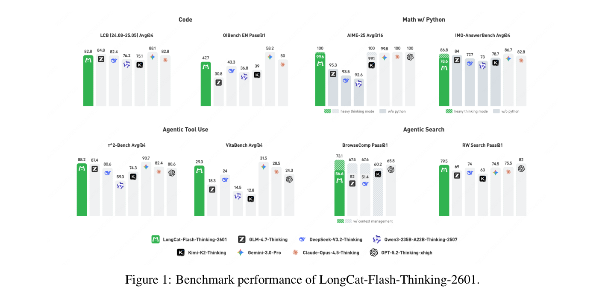
推理模型的近期进展推动了数学和编程等复杂任务的快速发展，在某些情况下甚至超越了顶尖人类专家 [DeepSeek-AI, 2025, Shao et al., 2025, Anthropic, 2025, Google, 2025]。由此自然产生下一个问题：如何将这种复杂问题求解能力用于解决复杂的真实生活任务，又如何在此基础上进一步扩展复杂问题求解能力？随着模型内在推理能力接近极限，我们发现，与外部环境交互成为进一步进步的关键机制 [MoonshotAI, 2025, DeepSeek-AI et al., 2025]。从这一角度看，agent 推理可以理解为通过与外部环境进行自适应交互来解决复杂问题的能力。除了内部思考，先进的 agent 推理能力还要求模型决定何时以及如何与环境交互，并有效整合环境反馈，以维持和推进推理过程。这样，推理与交互自然交织、相互强化，共同实现更通用、更强大的问题求解行为 [MiniMax, 2025]。然而，实现这种 agent 推理能力，对现有模型和训练流程提出了重大挑战。Agent 任务通常涉及长程轨迹、异构环境以及具有长尾特征的交互动态，对从预训练到后训练阶段的数据筛选整理、环境构建、强化学习策略和系统级基础设施提出了新的要求。
在本研究中，我们介绍 LongCat-Flash-Thinking-2601，这是一个强大且高效的 MoE 推理模型，总参数量为 560B，平均每个 token 激活 27B 参数，具备强大的 agent 推理能力。LongCat-Flash-Thinking-2601 的预训练大体遵循 LongCat-Flash-Chat 的方案 [Meituan et al., 2025]，保留原始数据分布，以维持具有竞争力的通用推理表现。在此基础上，我们通过精心设计的中期训练阶段，将模型进一步扩展到大规模 agent 推理。与传统推理相比，agent 行为通常涉及主动调用工具的长程轨迹。然而，这类交互模式在真实语料中极为稀缺，其中大多数数据主要由自然语言构成。因此，未经适配的模型对 agent 交互动态基本不熟悉，导致强化学习阶段的探索效率低下。为应对这一挑战，我们在中期训练中让模型接触中等规模的合成结构化 agent 轨迹，为 agent 推理行为提供良好的初始化。
在后训练中，我们着重高效扩展 RL 计算量，以提升 agent 推理能力。除了搜索和代码等特定 agent 场景，我们还将跨任务、跨环境的泛化能力视为先进 agent 行为的核心特征。这种能力主要通过与多样化环境交互获得，因此，环境构成了学习的试验场。为此，我们设计了一条自动化环境扩展流程，构建覆盖 20 多个领域的复杂、多样化环境，同时严格保证可执行性与可验证性。由于生成的环境在领域和难度上具有显著异质性，在这些环境中训练需要细致地协同设计训练策略与基础设施支持，以确保多领域环境学习的稳定性和有效性。为在这一设定下支持大规模 agent 强化学习，我们扩展了多版本异步训练系统 Dynamic ORchestration for Asynchronous Rollout（DORA，异步轨迹生成的动态编排），使最多 32,000 个环境能够并发执行，并实现可扩展、稳定的训练。然而，向真实场景泛化仍然极具挑战，因为真实环境本质上并不完善。为缩小理想化训练设定与实际部署之间的差距，我们系统性分析真实世界的噪声，并设计一条自动化流程，逐步将多类型、多级别的环境不完善因素纳入多领域环境训练过程。
为进一步推动推理能力超越现有极限，LongCat-Flash-Thinking-2601 加入了 Heavy Thinking 模式，实现推理的有效 test-time scaling。该模式将具有挑战性的问题求解分解为互补的阶段，同时扩展推理宽度和深度，使模型既能探索多样的求解路径，又能逐步完善推理。我们引入额外的强化学习阶段，增强模型汇总和完善中间推理结果的能力，进一步提升其有效性。
在通用推理基准上保持强大竞争力的同时，LongCat-Flash-Thinking-2601 在广泛的 agent 基准上达到开源模型中的最先进水平，并在分布外的真实 agent 场景中展现出强大的泛化能力。值得注意的是，LongCat-Flash-Thinking-2601 在 BrowseComp 上达到 73.1%，在 RWSearch 上达到 77.7%，在 \(\tau ^{2}\)-Bench 上达到 88.2%，在 VitaBench 上达到 29.3%，成为 agent 搜索和 agent 工具使用任务中领先的开源模型。
我们的工作有三项核心贡献：
（第一项贡献在原文第 3 页接续。）
我们的模型建立在 LongCat-Flash-Chat 的预训练方案之上 [Meituan et al., 2025]，继承其数据分布，以保留强大的通用语言和推理能力。除传统推理外，agent 行为通常涉及主动调用工具的长程轨迹。这带来两项额外挑战：（i）对长上下文建模效率的需求显著增加；（ii）真实世界缺乏大规模 agent 轨迹。为满足 agent 推理的长上下文要求，我们采用分阶段中期训练流程，逐步增加上下文长度，为 32K/128K 阶段分配 500B token，并为 256K 阶段额外分配 40B token。由于在模型尚未具备基本 agent 行为时，仅依靠大规模强化学习通常效率低下且不稳定，我们选择在这一阶段让模型接触中等规模的 agent 数据。为缓解真实 agent 轨迹稀缺的问题，我们构建了混合数据合成流程，用于收集和构建 agent 训练数据。此外，我们根据任意预训练 checkpoint 预测中期训练阶段的最优超参数，专门将寻找最佳配置的计算成本降至最低（见附录 A）。
在遵循原始中期训练方案以保留通用推理能力的基础上 [Zhang et al., 2025a, Tu et al., 2025]，我们进一步用结构化 agent 轨迹扩充数据分布 [Xu et al., 2026]。由于大规模、高质量的 agent 数据极为稀缺，尤其是涉及推理、规划与交互的长程轨迹，我们构建了一套混合数据合成框架来填补这一缺口。具体而言，该框架利用两种互补来源：非结构化文本与可执行环境，分别对应文本驱动合成和基于环境的合成。前者提供广泛的语义与任务多样性，后者则保证逻辑一致性和可执行性。此外，为显式增强规划能力——这是 agent 推理的核心组成部分，却难以从现有数据中获得——我们进一步设计了专门的、以规划为中心的数据构建策略。如图 2 所示，采用这一增强中期训练方案的模型展现出更高的 agent 能力上限，体现为在 \(\tau ^{2}\)-Bench 上更高的 pass@k。
大规模文本语料包含丰富的隐式程序性知识，例如教程、操作说明和多步骤问题求解流程。我们利用这一特性，通过以下流程挖掘这些潜在过程，并将其重构为显式的 agent 交互轨迹：
为进一步增加合成轨迹的结构复杂度，我们应用两种基于分解的数据增强方式：
（推理分解的说明在原文第 4 页接续。）
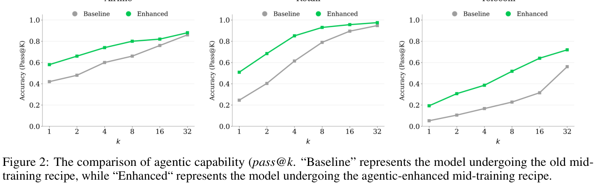
（接原文第 3 页“推理分解”。）
这一过程将轨迹转化为体现 agent 跨多个步骤推理的决策过程。
除从文本得到的轨迹之外，我们还直接从可执行环境构建 agent 数据，以保证逻辑正确性和执行一致性。我们为收集到的工具集实现轻量级 Python 环境，并通过受控的工具链采样和执行验证生成轨迹：
我们观察到，agent 推理高度依赖规划能力，后者决定模型如何分解复杂目标、探索替代方案，以及确定中间决策。然而，现有数据对这类以规划为中心的行为覆盖不足，也难以大规模获取。为在中期训练中显式增强这一能力，我们设计有针对性的数据构建策略，将现有轨迹转化为以规划为中心的决策过程。第一类数据着重合成有效的问题分解轨迹，并配以正确的初始动作选择，为从粗到细的规划和早期决策提供监督。第二类数据以完整交互轨迹为起点，在每个决策步骤生成多个备选候选，以进一步丰富轨迹。随后训练模型对这些候选进行推理和选择，将原本线性的轨迹转化为结构化的多步骤决策过程。
利用强化学习进行后训练，已成为激发更强推理能力的主要方法。沿用 LongCat-Flash-Thinking [Meituan. et al., 2025]，我们采用统一的多领域后训练流程：首先在共享框架下训练各领域专用的专家模型，再通过模型层面和数据层面的合并，将它们整合为单一通用模型。
具有 agent 推理能力的强化学习需要：（i）精心准备的训练设置，包括可扩展的环境构建、高质量冷启动数据以及经过良好校准的 RL 任务集；（ii）能够持续支持高吞吐、异步、长尾多轮轨迹生成的专用基础设施；（iii）在异构领域与不同难度水平下保持稳定、有效的专门训练策略。在本节中，我们介绍一套系统性流程，解决这些挑战并实现可扩展的 agent 强化学习。
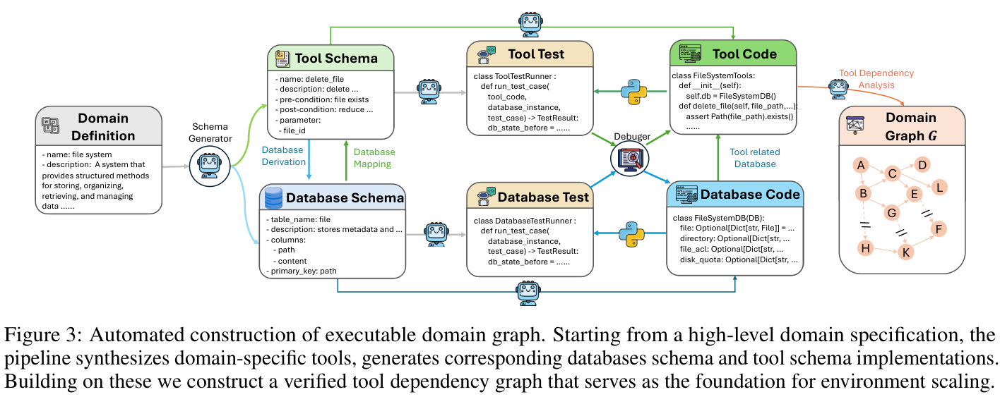
在进行大规模强化学习之前，需要完成若干必要的准备步骤。标准强化学习依赖两个核心组成部分：（i）经过良好初始化、具备与任务相关的基本行为的策略；（ii）经过系统性设计、能够支持稳定且有效学习的训练任务集。除了这些共同组成部分，agent 强化学习还需要可靠、可扩展的环境基础，以支持长程、交互驱动的训练。
传统推理大体上不依赖环境，完全在内部语言空间中进行。相比之下，环境构成 agent 系统的定义性组成部分，因为它们直接决定 agent 能够感知什么、如何与外部系统交互，以及哪些动作能够在世界中执行。我们重点介绍 agent 任务中两类特别具有挑战性的环境：agent 编程和 agent 工具使用。对于 agent 编程任务，环境以可执行代码沙箱的形式存在，必须同时支持复杂的真实工具链、确保严格的执行正确性，并在大规模并行使用下保持稳定、可复现。对于通用 agent 工具使用任务，环境必须以一致的方式对异构工具与数据库之间复杂、多样化的交互进行建模。这些要求需要专门的领域环境设计，下面详细说明。
对于每个编程任务，agent 必须在可执行代码沙箱中操作，并与各种终端工具实时交互。这一设定带来两项主要挑战：对高效、大规模资源调度的需求，以及工具和执行环境的异质性。在大规模训练中，沙箱系统必须同时保证灵活性和稳健性。为应对这些挑战，我们设计了可扩展的执行沙箱系统，提供统一工具接口和高吞吐交互。为处理真实代码执行场景的异质性，我们将搜索、文件读写、代码编辑和 shell 执行等常用工具整合为标准化环境接口。为进一步支持大规模训练，我们实现高并发沙箱调度器，异步分配和回收沙箱实例，将任务分派到工作节点，并并行执行数千个沙箱，从而将环境启动和阻塞开销移出训练的关键路径。
先进 agent 推理能力的核心特征是泛化，即在已知环境中获得有效行为，并可靠地将其迁移到未见过的场景。为训练这样的通用 agent，我们认为，可迁移的 agent 推理能力应当从对多样化工具集和交互模式的接触中涌现。虽然设计一个能够完整捕获真实工具使用复杂性的单一元环境并不可行，但我们发现，一组足够多样化的环境能够提供基础，使模型形成可迁移、可泛化的工具使用行为。然而，在实践中，构建这样的环境面临不可忽视的挑战，因为不同领域对交互接口、执行机制和评估标准提出了不同要求。
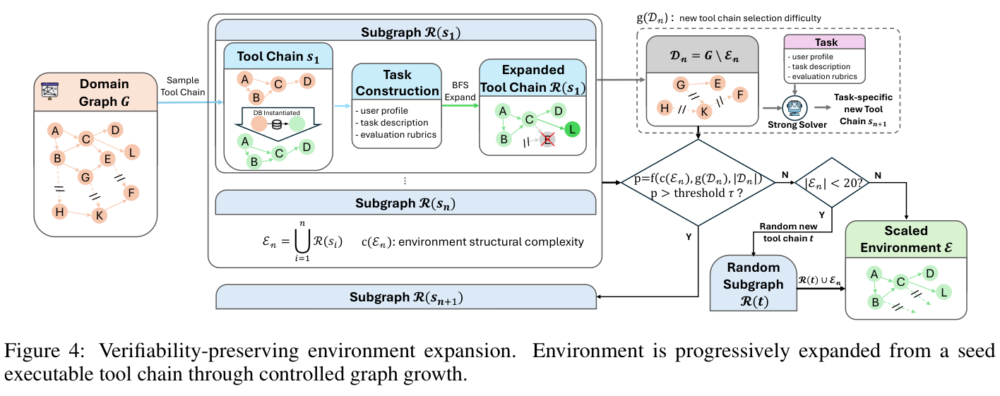
我们设计了一条全自动流程，将高层领域规范转化为可执行图。如图 3 所示，该流程根据领域定义合成专用工具集，并将其功能抽象为统一数据库模式，同时显式定义工具—数据库映射。基于这一模式层面的规范，流程随后自动生成数据库实现和相应的工具代码。为确保正确性和稳健性，我们通过单元测试与辅助调试 agent 验证生成代码。在实践中，这条流程将模式层面的设计转化为完全可执行工具实现的成功率超过 95%。最后，我们根据经过验证的工具集构建工具依赖图，作为后续环境构建与扩展的基础。
利用自动化流程，我们构建了一组领域专用工具图 \(\mathcal{G}\)，覆盖 20 多个领域。每个工具图 \(G \in \mathcal{G}\) 都包含超过 60 个工具，组织为密集的依赖图，并配有相应的可执行、工具专用数据库模式实现，为大规模探索与多样化环境构建提供足够的结构复杂度。
接下来介绍基于领域图构建可执行环境的流程。给定领域专用工具图 \(G\)，我们首先采样一条中等规模的工具链 \(s_{1}\) ⊂ \(G\)。此前被选中过的工具，其采样概率会逐步降低，以促进任务多样性。对于 \(s_{1}\) 中的每个工具，我们依次实例化相应的数据库状态，确保所有必要工具依赖均得到充分满足。在构建与工具关联的数据库后，我们自动生成以该工具链为基础的任务。采样得到的 \(s_{1}\) 作为生成任务的一条可执行工具链。为减轻潜在人类先验偏差，任务生成器被限制为只能使用完整工具链，不进行任何刻意的任务设计。具体而言，每个生成任务包含三个部分：（\(i\)）任务描述；（ii）用户画像；（iii）评估准则。为确保监督可靠，我们通过多轮一致性检查验证评估准则，保证任何可执行的工具链都可以作为正确解被接受，而错误或不完整的轨迹始终被拒绝。
我们注意到，任务难度来自两个互补来源：交互复杂度和环境复杂度。通过合成需要不同程度澄清、规划与多步骤交互的多样化用户提示词，我们保证交互复杂度，鼓励模型表现出丰富、自适应的 agent 行为。环境复杂度则通过底层工具图的结构性质量化，包括所涉及工具节点的数量以及它们之间的连接密度。
增加环境复杂度的一种自然方式，是通过从 \(G\) 引入额外工具节点、同时维护其数据库实例，将初始工具链 \(s_{1}\) 扩展为更大的子图 \(R(s_{1})\)。值得注意的是，扩展后的环境还可能包含多条有效的可执行工具链。然而，随着子图增长，维持跨工具的数据库一致性变得越来越困难。特别是，由于工具依赖图施加的约束，不受控地引入额外工具节点，可能引发此前未满足依赖的级联反应，需要大量扩充数据库并维护众多辅助工具节点。一旦数据库状态在扩展过程中变得不一致，工具调用就可能产生不可预测的结果，使有效的工具轨迹也无法执行。这可能导致正确解被错误判定为失败，从而在训练中引入有偏的负奖励。为减轻这一问题，我们通过延伸可执行工具链来扩展环境，而不是盲目注入随机工具。具体而言，从 \(s_{1}\) 开始，我们在工具图上进行类似 BFS 的扩展，并且只有在新工具节点的全部依赖都已由先前实例化的工具满足、且这些工具的数据库状态已完整构建时，才添加该节点。
（受控扩展策略的说明在原文第 7 页接续。）
（接原文第 6 页。）
这种受控扩展策略，使我们能够在保留可执行性和可靠监督的同时，逐步增加环境复杂度。
通过这种受控图扩展，我们将 \(s_{1}\) 扩展为更复杂的子图 \(R(s_{1})\)。将得到的扩展环境记为 \(E_{1} = R(s_{1})\)。令 \(D_{1} = G\) ∖ \(E_{1}\) 表示 \(E_{1}\) 尚未使用的工具节点。进一步的设计选择是，是否初始化另一条种子可执行工具链 \(s_{2}\) ⊆ \(D_{1}\)，并将其扩展为 \(R(s_{2})\)，以构建环境：
E₂ = R(s₁) ∪ R(s₂)，
从而进一步增加环境复杂度。我们根据以下因素作出这一决定：（\(i\)）当前环境的结构复杂度 \(c(E_{1})\)；（ii）从剩余图中识别新有效工具链的难度 \(g(D_{1})\)；（iii）剩余未使用节点的数量 \(|D_{1}|\)。具体而言，给定当前环境：
Eₙ = ⋃i=1n R(sᵢ)，
我们定义剩余未使用工具集为 \(D_{n} = G\) ∖ \(E_{n}\)，并以如下概率从 \(D_{n}\) 中采样新种子链 \(s_{n}+_{1}\)：
p = f(c(Eₙ), g(Dₙ), |Dₙ|)，
其中，\(g(D_{n})\) 通过强求解器从 \(D_{n}\) 中发现另一条有效工具链所需的尝试次数衡量，f(·) 则是控制环境增长过程的单调决策函数。在实践中，当 \(p > \tau\) 时，其中 \(\tau\) 是预定义阈值，我们从 \(D_{n}\) 中初始化一条新的种子标准工具链 \(s_{n}+_{1}\)，并将其扩展为 \(R(s_{n}+_{1})\)。为确保环境达到最低复杂度，我们还引入了兜底机制。如果扩展结果 \(E_{n}\) 只包含少量工具节点，我们从 \(G\) 随机采样一条额外的中等规模工具链，并将其纳入环境，同时确保其与当前工具链的数据库一致性。这保证每个构建的环境至少包含 20 个工具，提供足够的结构复杂度，以支持有意义的 agent 交互和探索。这种自动化环境构建策略，使我们能够在维持可靠监督信号的同时逐步扩展环境复杂度，实现稳定、高效的大规模 agent 强化学习。
冷启动阶段对后续强化学习阶段的策略初始化具有关键作用。我们的首要目标是让模型做好有效开展大规模探索的准备，而不是优先追求标准基准上的即时提升。高质量的冷启动策略必须展现多样的推理模式和稳定的交互格式，确保后续 RL 阶段能够高效开展，同时保留通用思考能力。因此，我们从更基础的角度评估冷启动模型，重点关注：（1）其在为 RL 阶段指定的特定任务上的熟练程度；（2）通过人工定性检查评估其推理路径的多样性。虽然我们报告标准基准上的 pass@k 表现以衡量底层推理能力，但这一指标只作为参考，并非主要优化目标。
冷启动训练的一个主要挑战，是构建能够有效使模型具备 agent 行为基础的高质量数据。对于数学、通用编程和 agent 编程任务等部分领域，真实世界存在大规模数据来源。在这些情况下，我们从现有来源筛选整理并组装轨迹，核心挑战在于严格的质量控制与可执行性验证。然而，对于搜索和工具使用等大多数 agent 任务，基本缺乏高质量的真实轨迹。因此，我们依靠精心设计的数据合成流程构建冷启动轨迹。接下来详细介绍，如何针对不同 agent 能力实施这两种互补策略。
Agent 能力需要强大的思考能力作为基础。因此，我们设计严格的数据过滤流程，构建高质量通用思考数据。具体而言，我们采用由 PPL 引导的 K-Center-Greedy（KCG）选择算法 [Sener and Savarese, 2018, Du et al., 2023, Wu et al., 2023]。现有基于 PPL 的过滤方法，要么忽略序列长度，要么对整个序列的 PPL 取平均 [Jiang et al., 2025, Zhang et al., 2025b]，这会掩盖局部困难 token，并丢弃信息丰富的样本。为应对这一问题，我们引入滑动窗口 PPL，计算序列中所有 512-token 窗口的平均 PPL 的最大值，从而捕获模型不确定性的峰值，避免被全局平均所稀释。在 KCG 选择过程中，我们用候选样本的滑动窗口 PPL 分数，对其与当前已选集合之间的距离加权。这一设计共同实现两个互补目标：KCG 保持对原始数据分布的覆盖，而滑动窗口 PPL 强调能够暴露模型当前推理能力缺口的样本。利用这条流程，我们从大规模语料中下采样得到 210K 个通用思考样本。在多个推理基准上，使用这一子集训练的模型优于使用完整语料训练的模型。
对于 agent 编程任务，大规模软件开发平台提供了丰富的真实轨迹来源。然而，从这些来源收集的原始轨迹往往存在噪声、局部错误或不可复现的问题，确保其可靠性和可执行性成为关键挑战。为此，我们构建了严格的代码交互轨迹筛选整理流程。我们要求所有保留轨迹都能在可复现环境中完整执行并验证，只保留正确解决目标问题、同时保留现有功能的轨迹。为进一步避免模型学习虚假行为，我们进行细粒度的动作级过滤，移除对正确求解没有贡献的错误、冗余或臆测性操作。此外，为保留真实调试过程中常见的长程推理模式，我们通过压缩较早步骤，保留涉及长时间、迭代式调试的轨迹，使长程代码推理得以保留，不受长度限制。
对于 agent 搜索能力，构建高质量轨迹需要显式建模多步骤证据收集和完整条件验证，同时避免基于局部信息的虚假捷径。这种结构化推理轨迹在真实搜索日志中很少见。因此，我们构建合成推理轨迹，优先保证正确性、推理完整性，以及对捷径行为的抵抗能力。我们通过严格过滤保证轨迹质量，移除简单案例，并要求统一的推理与工具使用格式。为避免基于局部证据碰巧猜对等捷径学习，我们要求轨迹显式验证查询中指定的全部条件。我们进一步通过压缩较早步骤，保留涉及长时间、迭代式探索的轨迹，使长程推理得以保留，不受长度限制。最后，我们复用后续强化学习阶段生成的轨迹，扩大数据收集规模并增加行为多样性。
对于 agent 通用工具使用能力，主要挑战在于对跨越异构工具与数据库的复杂、有状态交互建模，这些工具和数据库具有不同的模式及依赖结构。这类环境和交互轨迹也难以从真实来源中获取或标准化。我们在环境扩展流程之上构建可扩展的数据合成流程，通过联合定义领域、工具模式、数据库状态和任务目标，对覆盖 33 个代表性领域的真实工具使用环境建模，并生成以结构化工具依赖为基础的多步骤任务。为保证多样性，我们显式促进三个方面的变化：领域覆盖、轨迹结构和交互长度。每个任务允许多条不同的正确工具调用轨迹，交互跨度从简短对话到长时间多轮执行不等，覆盖广泛的任务难度和行为模式。为确保数据质量，所有合成轨迹都经过基于评估准则的结果验证和轮次级质量控制，严格过滤。只有正确达到目标最终状态的轨迹才会被保留。在这些轨迹内部，我们采用轮次级损失掩码，将失败工具调用、格式违规等低质量轮次排除在损失计算之外，使模型仅从正确动作中学习，同时保留完整交互上下文。
在强化学习中，环境定义 agent 能够做什么，而任务集决定 agent 被训练去做什么。二者共同塑造 agent 如何探索环境、分配计算资源，以及通过重复生成轨迹完善策略。设计良好的任务集应当信息丰富且复杂度适当，既不过于简单，也不至于难以处理，从而提供有效的学习信号。常见做法是先构建多样化环境集合，并配以跨多个领域、多个难度水平的任务指令，再通过评估模型通过率来判断任务是否适合。基于这一信号，选择既非轻易可解、又非过度困难的任务用于强化学习。然而，训练任务的可获得性在不同领域差异显著。对于编程等领域，已经存在大量复杂、高质量任务，可以直接收集并筛选整理。相比之下，对于 agent 搜索和工具使用等领域，合适任务十分稀缺，或并不存在可直接使用的形式，因此直接收集并不足够。为此，我们引入系统性合成流程，为 agent 搜索和工具使用场景构建跨越不同复杂度的任务集。
我们识别出刻画搜索问题的两项基本难度因素：（i）沿关系实体链进行多跳推理；（ii）在多个模糊约束下对单个实体进行推理。大多数复杂搜索任务可以视为这两项因素的组合或迭代完善。
（基于图的问答合成在原文第 9 页接续。）
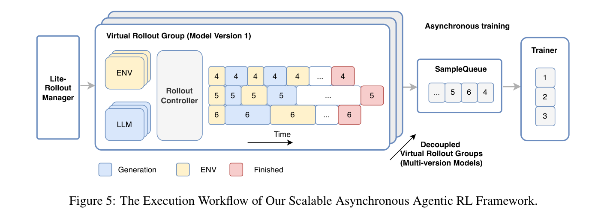
对于 agent 工具使用，我们直接通过第 3.1.1 节介绍的环境扩展流程构建任务集。每个合成环境自然定义了一个独立任务，这些环境的集合构成最终任务集。
与标准推理任务等单轮场景相比，agent 训练涉及与不同环境（ENV）或工具的多轮交互，对 RL 基础设施提出了新挑战。在典型的多轮轨迹生成阶段，LLM 生成、环境执行和奖励评估反复交织，构建用于 RL 训练的最终轨迹。在这一设定中，轨迹不仅具有长尾偏斜分布，还涉及不可预测、延迟分布偏斜的环境交互，导致 batch 处理时设备利用不足 [Fu et al., 2025, Zhang et al., 2025c, Lu et al., 2025a]。此外，我们的生产集群由中档加速器组成，尤其是每个设备可用内存仅约 60GB。这些硬件约束连同其软件生态，对实现稳定、可扩展的 agent RL 训练提出了重大挑战。为解决这些问题，我们扩展了多版本异步训练系统 DORA（Dynamic ORchestration for Asynchronous rollout）[Team et al., 2025]，使其全面支持多轮 agent 场景中的大规模 RL 训练。
如图 5 所示，我们的控制器采用生产者—消费者架构，由管理轨迹生成阶段的 RolloutManager、控制样本陈旧度的 SampleQueue，以及管理 Experience-Maker 和训练阶段的 Trainer 组成。
（框架组件的说明在原文第 10 页接续。）
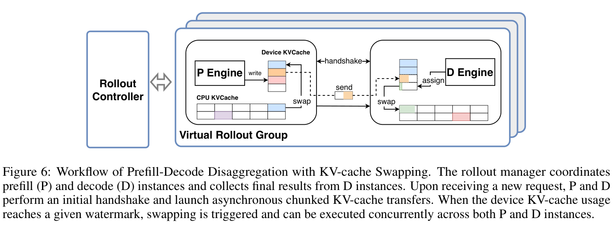
（接原文第 9 页。）
这些组件运行在不同节点上，主要通过远程过程调用（RPC）负责逻辑控制和协调，而运行在 CPU 或加速器上的工作节点执行实际任务。我们提出若干关键技术，实现高效、可扩展且稳定的 agent RL 训练。
为尽量减少 agent 场景中的设备空闲，我们基于流式 RPC [Team et al., 2025]，在轨迹生成过程内部以及轨迹生成与训练之间引入全流式异步流水线。在 RolloutManager 的轨迹生成循环中，我们移除 batch 屏障，使 LLM 生成、环境执行和奖励计算能够以单个样本为粒度，在远程工作节点上执行。这避免了加速器在等待批量 ENV 调用完成时处于空闲状态。为进一步解决长尾生成问题并保持训练稳定，我们的 DORA 系统支持多版本异步训练，不同模型版本生成的轨迹一旦完成就立即入队。在一个训练步内，多版本生成实例继续使用多个先前模型版本生成轨迹；与此同时，Trainer 一旦满足条件就可以开始训练，或者在训练设备空闲时，弹性扩展额外生成实例，获取无需额外设备成本的吞吐增益。
我们的算法设定需要大量环境，例如在约 400 台物理机器、数千个加速器上运行最多 32,000 个环境。然而，这些环境之间的密集交互会使 RolloutManager 在扩展时遭遇单机瓶颈，因为每次交互通常都涉及若干 CPU 操作。为解决这一问题，我们首先将原始设计拆分为一个管理全局控制元数据的 Lightweight-RolloutManager，以及多个 RolloutController，每个控制器以 DP 方式管理一个虚拟轨迹生成组的生命周期。虚拟轨迹生成组由多条轨迹及相关物理机器构成，包括生成实例和 ENV 实例。其次，为在生产任务中灵活调度大量环境，我们扩展 PyTorch RPC 框架 [Damania et al., 2023]，提供感知 CPU 空闲状态的远程函数调用与对象实例化。这一扩展支持在任意机器或空闲机器上实例化并执行远程环境，从而高效部署海量环境。
为在我们的加速器上高效生成 560B MoE 模型 LongCat-Flash-Thinking-2601 的输出，我们采用高程度的 EP，并为 decoding 使用图级编译。然而，在多轮 agent 训练中，长上下文请求频繁到达，导致 EP 组内部工作负载不均衡：分配到更长上下文的 rank 消耗了不成比例的计算和通信带宽，成为性能瓶颈。为解决这一问题，我们在 RL 训练中引入 prefill—decoding（Prefill–Decode，PD）分离 [Zhong et al., 2024, Qin et al., 2024]，如图 6 所示。对于生成实例，我们将 prefill 节点和 decoding 节点部署在独立设备组上，使 decoding 执行图不会被新到达请求的 prefill 工作负载打断。这避免生成效率下降，并在多轮轨迹生成中维持高吞吐。然而，PD 分离带来了额外挑战，包括 KV-cache 传输开销，以及当 decoding 节点上的设备 KV-cache 不足时产生的昂贵重计算开销，在我们的加速器上尤其如此。为降低 KV-cache 传输成本，我们按分块聚合 KV-cache 块，并支持 PD 节点之间的异步传输。我们将先前分块的传输与后续分块的计算重叠，尽量减少 KV-cache 传输开销。为避免设备上有限的 KV-cache 内存导致重计算，我们进一步引入驻留于 CPU 的 KV-cache。
（CPU KV-cache 的说明在原文第 11 页接续。）
（接原文第 10 页。）
该缓存根据需要动态换入和换出 KV-cache 块。这一设计消除了设备 KV-cache 容量不足带来的重计算开销，有助于在我们的加速器上维持高吞吐。
总体而言，我们的 agent RL 训练框架在 560B 模型上实现了工业规模下的强大性能与稳定性，支持数万个加速器和环境。根据生产任务的运行时统计，在整个轨迹生成过程中，我们的请求负载率1约为 63%。这一指标量化长尾请求对生成吞吐的影响，值越高表示利用率越好。训练期间未达到完全请求负载率，是因为我们限制向旧模型版本发送新请求，以牺牲部分效率来控制平均陈旧度。此外，在可能包含多次负载均衡操作的单个训练步内，我们采用两阶段策略：在第一次负载均衡前的初始轨迹生成阶段，尚不存在长尾生成时，允许每台设备处理较多请求，例如 8 个；随后，将每台设备的请求数限制在最优水平，例如 4 个，以避免重计算并提升生成效率。未来，我们计划采用更乐观的陈旧度控制策略，并探索感知陈旧度的稳定性技术，实现更高效的异步训练。总体而言，在覆盖不同场景的生产任务中，我们的多版本异步训练系统 DORA 比同步训练快 2 至 4 倍。
强化学习已成为持续提升模型推理能力的核心机制。传统上，RL 训练策略主要关注在相对同质的任务分布和单步轨迹生成下，稳定策略优化、提升样本效率，以及管理探索与利用之间的权衡。在这些设定中，任务难度可能差异很大，导致训练样本的学习价值高度不均衡。除了课程学习，我们还在每个训练步内动态分配轨迹生成预算，以有效利用有限的计算和训练时间预算，将学习资源集中在高价值任务上。为进一步提升训练效果，我们还将验证建模为辅助任务，支持生成并加速优化。
扩展到 agent 设定后，强化学习面临多轮交互和不可预测环境反馈带来的新挑战，对模型的有效上下文长度提出严格要求。为应对这一问题，我们引入上下文管理策略，使模型能够在有限上下文窗口下支持长程轨迹，同时保留信息最丰富的上下文。
进一步扩展到 agent 工具使用场景时，训练问题变得更加复杂。如前所述，泛化和稳健性在这一设定下尤为重要。为促进泛化，agent 工具使用环境来自我们的环境扩展流程。单个 batch 中的任务可能跨越多个领域的异构环境，加剧训练不稳定与不均衡。通过细致地协同设计训练策略和基础设施支持，我们大规模开展高效、稳定的多领域环境训练。向真实场景泛化仍具有挑战，因为真实环境本质上并不完善。为提高稳健性，我们将环境不完善因素显式纳入训练，使模型在非理想条件下学会有韧性的行为。这些设计共同形成统一的训练策略，实现稳定、高效、可扩展的 agent 强化学习。
在大规模强化学习中，训练集覆盖难度高度多样化的任务。因此，简单地统一对待所有任务通常导致学习效率低下。为此，我们设计了一组应用于全部强化学习训练方案的策略。具体而言，我们引入课程学习，逐步提高任务难度；采用动态预算分配，将计算资源集中到当前模型状态下信息最丰富的任务上。我们还将自验证纳入辅助任务，进一步提升优化效率与效果。
我们采用 Group Sequence Policy Optimization（GSPO）作为训练目标，因为它在 MoE 模型上具有经过实践验证的有效性，并能为长程 agent 轨迹提供更稳定的序列级优化。
1 请求负载率是介于 0 与 1 之间的连续值，在整个轨迹生成期间对所有生成设备汇总计算。例如，当最大响应长度设为 64K、仅考虑设备上可用的 KV-cache 块以避免重计算时，我们的加速器可容纳约 4 个请求。如果某个加速器上只有 1 个请求，请求负载率为 25%；如果没有请求则为 0%，这种情况尤其会出现在长尾生成场景中。
给定输入 \(x\)，我们从旧策略 \(\pi _{\theta old}\) 中采样一组 \(G\) 条轨迹 \(\{y_{i}\}_{i=1}^{G}\)，并优化：
其中，\(\varepsilon\) 为裁剪阈值。遵循 Zheng et al. [2025]，我们采用基于组的优势估计，并根据归一化似然在序列层面定义重要性比率 \(s_{i}(\theta )\)。我们主要依赖面向结果的监督，并放宽对长轨迹的惩罚，使有效策略能够在训练中自然涌现。
为提升学习效果，我们采用课程学习策略，逐步组织训练过程。具体而言，我们的课程沿两个互补维度组织：任务难度和能力要求。任务难度通过优化前估计的模型通过率量化，通过率越低，任务越有挑战性。同时，我们根据任务主要锻炼的 agent 能力刻画任务，例如基本工具调用、多步骤规划或自主决策。在训练早期，我们优先安排更易学习的任务，或者能让 agent 接触预期在解决更困难任务时自主复用的能力的任务。随着训练推进，我们逐步转向既更困难、又需要更高级 agent 能力组合的任务。这种二维课程使模型先获得可复用的 agent 技能，再将其组合起来，解决越来越复杂的问题。在实践中，这一课程策略提高了总体任务通过率，并在最具挑战性的任务上带来尤为显著的增益。我们在 agent 场景中的分析表明，这些提升来自三个主要因素：
我们进一步在训练 batch 内采用动态预算分配，优先处理在当前模型状态下提供更高学习价值的任务。我们观察到，在固定轨迹生成预算下，难度与模型当前能力良好匹配的任务，能够带来显著更高的学习增益。现有大规模 RL 流程通常为所有任务分配统一轨迹生成预算。近期研究开始探索自适应轨迹生成分配 [Li et al., 2025]，但多数方法依赖预定义价值函数。然而，随着模型能力在训练中不断演化，这一假设不再成立，因为能够提供最有信息量学习信号的任务集合也会随之变化。
为此，我们提出一种动态轨迹生成预算分配策略，使其适应模型的实时训练状态。具体而言，我们通过监控实时训练指标 \(m_{t}\)（例如通过率），量化当前策略 \(\pi _{\theta t}\) 的能力。我们通过动态价值函数对具体任务 \(\tau _{i}\) 和 \(m_{t}\) 进行映射：
其中，\(v_{i,t}\) 表示任务 \(\tau _{i}\) 的估计价值，刻画模型在任务空间中不断演化的偏好分布。基于这一价值估计，我们采用基于堆的贪心算法，计算使当前训练 batch 总体学习价值最大化的轨迹生成分配方案。
除了仅将模型作为执行生成的行动策略，我们还让模型充当验证器，评估自身 on-policy 轨迹的质量。我们观察到明显的不对称性：即使先进推理模型能够生成高质量轨迹，在缺乏显式标准真值信号时，往往也难以可靠判断这些轨迹的正确性。这促使我们显式增强模型的自验证能力，并将其作为辅助信号，提升模型在特定领域的推理能力。
具体而言，我们在强化学习期间引入 on-policy 自验证，将其作为动态激活的训练阶段。当生成器出现停滞或收敛到局部最优的迹象时，我们触发验证阶段，由模型评估自身生成的轨迹。相比生成，验证是较容易的任务，通常能获得更高奖励。为进一步增强自验证的有效性，我们采用专门的训练方案。具体而言，我们确保验证重点覆盖具有挑战性的案例，并将验证的影响与相应生成轨迹的质量关联起来，使辅助信号促进生成的忠实改进，而不是退化为捷径行为。在实践中，引入 on-policy 自验证作为辅助任务能够加速模型收敛，从而改善生成表现。
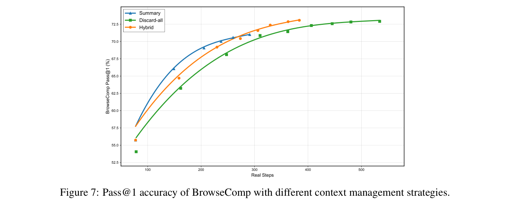
在 agent 场景中，交互模式自然从单轮生成转向模型推理与工具调用交织的多轮轨迹。随着任务复杂度增加，交互轮数和工具响应长度都不断增长，使总上下文长度高度可变，并且往往难以控制。在实践中，这经常导致上下文窗口溢出、推理链截断，以及任务执行不完整。因此，在有限上下文窗口下进行带工具使用的强化学习时，有效的上下文管理成为必要组成部分。
我们设计混合上下文管理策略，以在有限上下文窗口下支持长程轨迹。现有 agent 模型主要采用两种上下文管理策略：
结合上述两种策略，我们设计了面向 agent 推理的混合上下文管理方法。具体而言，每当上下文窗口超过预定义的 80K token 上限时，我们首先进行基于摘要的压缩。当交互超过最大轮数时，我们触发全部丢弃重置，使用从原始问题得到的初始化系统提示词和用户提示词，重新开始生成。
我们在 BrowseComp 基准上评估这三种策略 [Wei et al., 2025]。如图 7 所示，在不同计算预算下，上下文管理让模型能够扩展测试时计算资源，从而带来显著性能提升。值得注意的是，混合策略在大多数情况下优于另外两种策略，并在整个实验中展现出最高效率，准确率从 55.8% 提升至峰值 73.1%。这一优异表现来自由上下文窗口和交互轮数约束控制的压缩与重置之间的动态切换，实现了保留关键推理上下文与控制计算开销之间的良好权衡。此外，我们采用渐进式丢弃调度，逐步提高丢弃阈值，使更困难样本的推理步骤数能够逐渐增加。
引入扩展后的环境，进一步提高了强化学习的复杂度，超出了工具增强设定。在这一阶段，我们在跨多个领域、具有高度异质性的环境上开展大规模训练。我们期望，在如此多样化的环境中训练，能够促使模型获得可迁移的 agent 行为，泛化到特定领域模式之外。
（环境异质性带来的挑战在原文第 14 页接续。）
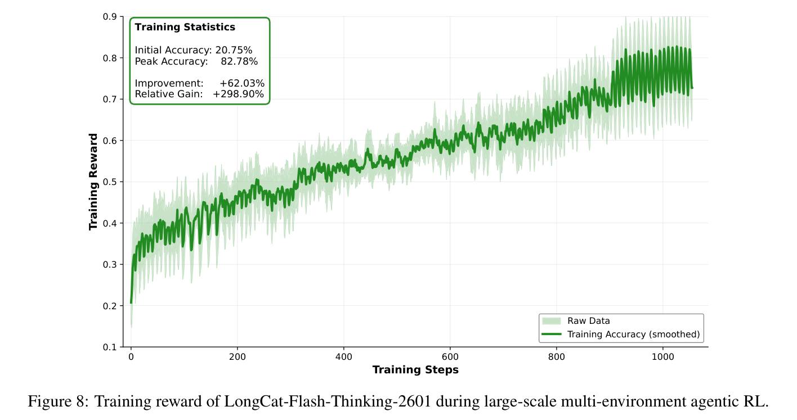
（接原文第 13 页。）
这种异质性在算法和系统两个层面引入新的挑战：训练过程必须同时维持跨领域泛化，确保在高度多样化的任务分布下稳定优化，并在具有长尾特征、负载不均衡的环境工作负载下保持高效。为应对这些挑战，我们采用多领域环境训练范式，在每个训练 batch 内跨多样化环境联合优化。为确保稳定性与可扩展性，我们需要协同设计训练策略和异步基础设施。受环境扩展构建流程启发，我们注意到真实环境本质上并不完善。因此，我们在训练期间显式引入环境噪声，提高模型对异构、不可靠环境反馈的稳健性。
为改善跨环境泛化和训练稳定性，我们采用多领域环境训练策略，在每个训练 batch 内跨多样化环境联合优化。通过环境扩展，我们构建了覆盖 20 多个领域的数万个环境，广泛覆盖异构交互模式。
在这一设定下训练会带来不可忽视的系统挑战。具体而言，为维持训练稳定性，需要确保所有领域对整体训练过程作出大致相当的贡献，同时防止任何单个训练 batch 被少数领域主导。这一算法约束显著降低了 DORA 系统的效率，因为它破坏了异步设计原则：训练器可能被迫等待缓慢或罕见的长尾领域产生足够样本，而较快领域则积累过多生成轨迹，导致调度空隙和设备利用不足。为减轻这一问题，我们支持为不同数据类型和领域分别配置过采样比例。在实践中，我们为更困难或吞吐更低的领域增加轨迹生成配额，使其能够贡献足够样本而不阻塞整个流水线，同时以较低的有效比例对较快领域采样。这一设计放宽了严格的逐 batch 平衡约束，在保证训练收敛的同时，使训练阶段的数据混合保持大致平衡，并维持 DORA 异步训练的高吞吐特性。
为确保这一训练设定下的动态预算分配与异步基础设施兼容，我们根据各任务的历史通过率，为其引入过采样系数。成功率较低的任务被赋予更高过采样系数，从而有效地为更困难任务分配更多轨迹生成预算。具体而言，每个任务根据其过采样系数复制到多个组中，各组在训练时独立计算优势。这一设计近似实现动态预算分配，同时保留 DORA 简单且完全异步的调度行为，以极小的系统复杂度实现动态 token 预算控制。
图 8 展示 LongCat-Flash-Thinking-2601 的训练奖励曲线，图 9 展示其在不同训练步的相应 agent 基准表现。图 8 中的训练奖励在整个训练期间呈现稳定、持续上升的趋势。
（训练曲线与评测结果的说明在原文第 15 页接续。）
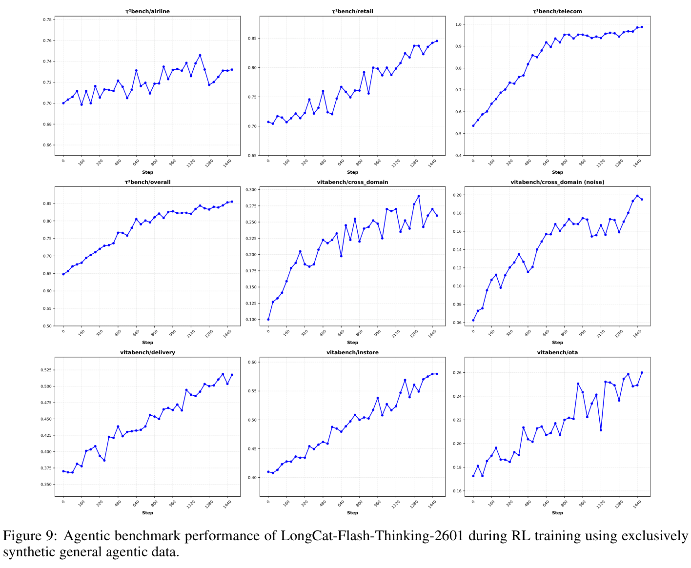
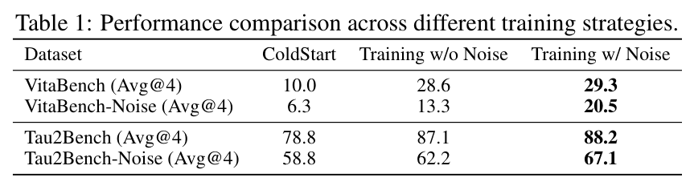
（接原文第 14 页。）
这表明，我们对算法与基础设施的协同设计有效保证了大规模训练的稳定性。此外，图 9 中的 agent 基准表现显示，模型在多个基准上具有强大泛化能力，验证了环境合成流程的有效性。在实践中，多领域环境训练提高了跨环境的平均任务完成率，在最具挑战性的环境上提升尤其显著。此外，模型在随机生成环境中也取得优异表现，展示了强大的泛化能力。
我们将环境不完善因素显式纳入训练过程，以提高稳健性。现有 agent 模型部署到此前未见过或不完善的环境时，性能会显著下降。这一问题主要源自当前 agent 训练范式的一个常见假设：agent 通常使用精心整理的指令训练，并与稳定、受到良好控制的环境交互。相比之下，真实环境本质上并不完善。用户表现出多样化交互风格和不可预测行为，而工具可能因各种外部因素失败、返回含噪输出或产生不完整结果。我们系统性分析真实世界的噪声，而不是在训练期间假设环境理想，再依赖 agent 事后适应。
（稳健 RL 的说明在原文第 16 页接续。）
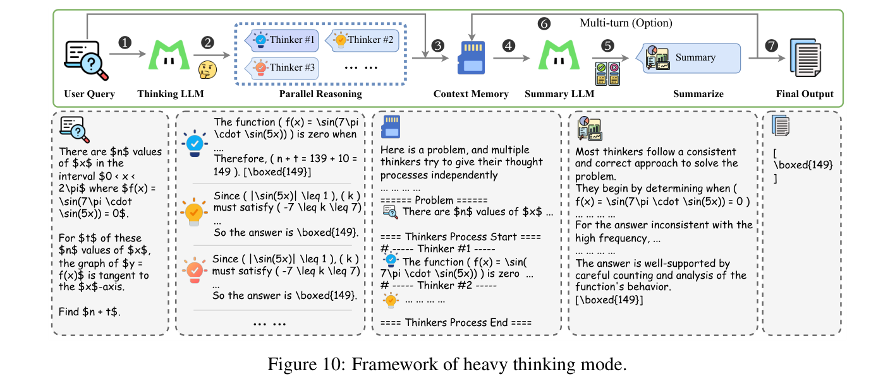
（接原文第 15 页。）
我们还设计了自动化流程，将环境不完善因素显式纳入训练。为避免引入不可靠或误导性的奖励信号，我们确保注入的不完善因素不会使任务失去可解性，而是增加交互过程的难度与随机性。具体而言，我们对真实 agent 场景中的两类主要交互噪声建模：指令噪声，捕获用户交互模式中的歧义与变化；工具噪声，模拟外部工具的执行失败、不一致响应和局部结果。
在 agent 强化学习期间，我们利用基于课程的策略逐步引入这些噪声。我们以 agent 模型在同一任务的完善与不完善环境之间的性能差距，衡量其稳健性。从轻微扰动开始，当模型在当前噪声级别表现出足够稳健性时，我们逐渐增加噪声难度与多样性。这种自适应过程确保训练保持信息价值，而不会令模型不堪重负，并避免在噪声过强的设定中进行低效探索。
表 1 给出了在不完善环境下对稳健训练策略的消融研究。结果表明，带噪声训练在标准 agent 基准上取得相当甚至略好的表现，同时在含噪和不完善条件下带来显著提升。
Test-time scaling（TTS）通过扩大推理期间的计算量，已成为提升模型在复杂推理任务上表现的有效范式。近期进展表明，通过带有自我反思的长 CoT 增加推理深度，使模型能够迭代完善推理过程 [OpenAI, 2024, DeepSeek-AI, 2025, DeepMind, 2025]。与此同时，自一致性和蒙特卡洛树搜索（MCTS）等方法沿宽度维度扩展计算，探索多条推理轨迹，以更好地逼近模型的推理能力上限。最近，若干前沿模型引入了 Heavy Thinking [Team, 2025, OpenAI, 2025a, MoonshotAI, 2025, Hu et al., 2025]，旨在测试时联合扩展推理深度和宽度。在实践中，这些模式优于仅扩展深度或宽度的策略。然而，这类 Heavy Thinking 的具体实现细节大多尚未披露，限制了其可复现性与系统性研究。
为进一步释放推理能力、突破现有性能上限，我们提出简单有效的 Heavy Thinking 框架，将测试时计算分为两个互补阶段：并行推理与深度思考。如图 10 所示，在第一阶段，我们允许思考模型并行生成，产生多个候选推理轨迹，以扩展探索广度。在第二阶段，我们利用摘要模型对这些轨迹进行反思性推理，综合其中的中间推理和结果，形成最终决策。为支持工具使用和多轮对话场景，我们还引入上下文记忆模块，保存消息历史。如图 11 所示，每一轮中，摘要模型都会接收来自并行推理阶段的历史消息，以感知上下文。我们设计专门的提示词模板，组织当前轮并行轨迹的排列组合（仅保留回答内容），并引导摘要模型生成最终响应，以汇总或完善并行推理阶段得到的回答。
（摘要模型输出与额外 RL 阶段的说明在原文第 17 页接续。）
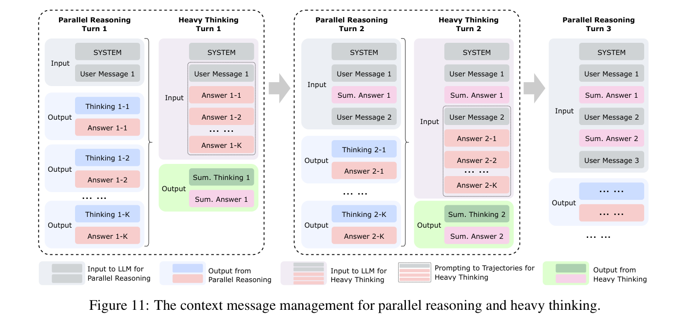
（接原文第 16 页。）
我们还约束摘要模型的最终输出响应，使其风格和格式与并行推理阶段保持一致，从而可以直接将摘要模型的响应与消息历史拼接。值得注意的是，思考模块和摘要模块既可以共享同一组模型参数，也可以实例化为不同模型。
为进一步提升表现，我们还引入专门针对摘要阶段的额外 RL 阶段。在实践中，我们发现 Heavy Thinking 在广泛设定中都有效，包括长 CoT 推理、tool-integrated reasoning，以及完整的 agent 工具使用场景。通过允许测试时计算沿推理深度与宽度两个方向自适应扩展，Heavy Thinking 始终优于自一致性方法，而且随着测试时计算预算增加，其性能优势越来越明显。
我们的评测覆盖模型能力的五个方面：数学推理、agent 搜索、agent 工具使用、通用推理和编程。
我们使用标准奥林匹克竞赛级基准评估数学推理，包括 AIME 2025 [Zhang and Math-AI, 2025]、HMMT 2025（2 月）[HMMT, 2025] 和 IMO-AnswerBench [Luong et al., 2025]。除这些标准基准之外，我们引入 AMO-Bench [An et al., 2025]，这是现有奥林匹克竞赛级基准中最具挑战性的数据集。它包含 50 道由人类专家设计的问题，提供英文和中文两个版本，支持分析跨语言数学推理。我们发布 AMO-Bench 英文版及评测脚本2。由于这些数据集规模有限，我们报告 Avg@k 指标，IMO-AnswerBench 使用 \(k=4\)，其余数学基准使用 \(k=16\)。我们主要关注 tool-integrated reasoning 表现，其中工具指代码执行。对于支持代码执行的外部模型，我们在评测中启用这一功能。对于不支持代码的模型，我们报告官方结果（若可用），或其不使用工具时的表现。
我们在 BrowseComp [Wei et al., 2025] 和 BrowseComp-ZH [Zhou et al., 2025] 上评估 agent 搜索能力，并同时报告启用与未启用上下文管理的结果。对于 BrowseComp-zh，我们发现原始标注中的一些错误，并人工修正了 24 个案例的答案3。我们尝试在自身 agent 搜索框架下，复现开源及闭源模型在这些基准上所报告的结果。然而，我们观察到的表现始终低于其报告值。因此，对外部模型，我们采用其官方报告结果。为实现公平、受控的搜索能力比较，我们还构建了 RWSearch。
（RWSearch 的说明在原文第 18 页接续。）
2 https://github.com/meituan-longcat/AMO-Bench/
3 https://github.com/AGI-Eval-Official/BrowseComp-ZH-revised
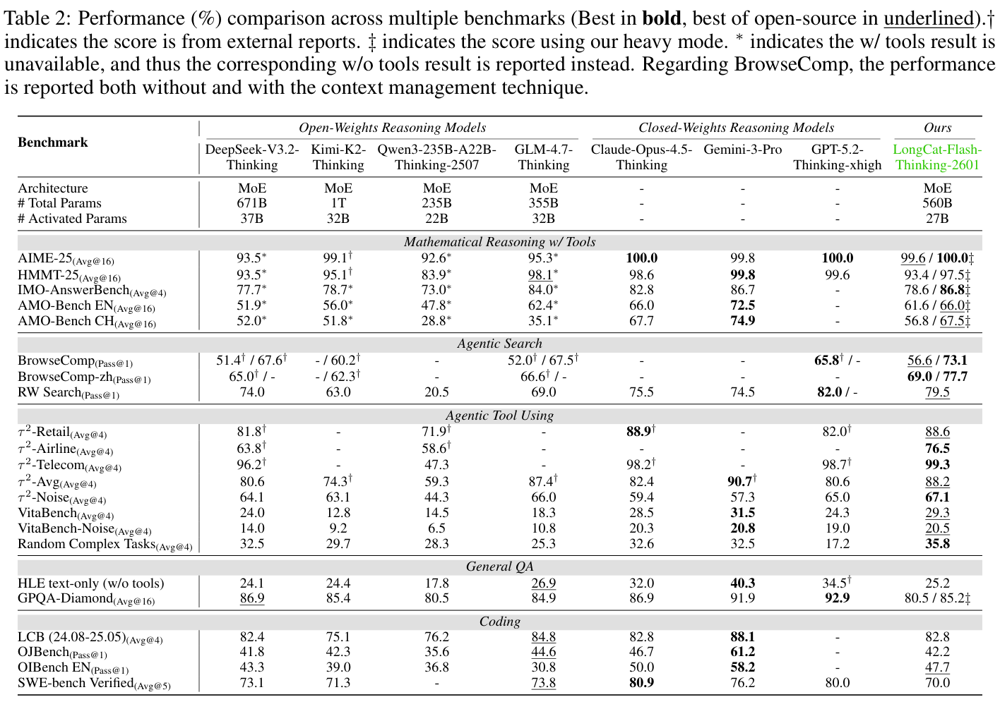
（接原文第 17 页。）
RWSearch4 是一个具有挑战性的 agent 搜索基准，包含 200 个需要复杂推理和多步骤信息检索的真实搜索查询。所有模型均在不使用上下文管理的情况下在 RWSearch 上评测，以确保公平比较。
我们在 \(\tau ^{2}\)-Bench [Barres et al., 2025]、VitaBench [He et al., 2025]、\(\tau ^{2}\)-Noise、Vita-Noise 和 Random Complex Tasks 上评估 agent 工具使用能力。对于 \(\tau ^{2}\)-Bench，我们观察到默认用户模拟器偶尔出现异常行为，在评测中引入不受控噪声。为解决这一问题，我们用 GPT-4.1 替换原始模拟器，并相应调整提示词策略 [Anthropic, 2025, OpenAI, 2025b, Google, 2025]。对于 \(\tau ^{2}\)-Bench 的航空子集，我们还发现若干标注和环境问题，可能导致虚假失败与不可靠评测 [Anthropic, 2025, OpenAI, 2025b, Google, 2025]。因此，我们在修复并清理后的航空子集版本上评估所有模型，其中修正了 19 个有问题的案例。这些修改均已公开，以支持复现5。对于 VitaBench，我们更新了评测设置，将验证器模型升级为公开可用的最强版本，并采用更严格的评估标准，从而进一步提升基准可靠性。我们已公开这一更新后的 VitaBench 版本6。
接下来介绍 \(\tau ^{2}\)-Noise、Vita-Noise 和 Random Complex Tasks 的构建与评测协议。
4 https://github.com/AGI-Eval-Official/RW-Search
5 https://github.com/AGI-Eval-Official/tau2-bench-revised
6 https://github.com/meituan-longcat/vitabench
我们将发布噪声注入流程，并将 Random Complex Tasks 集成到开放评测平台中，以支持后续复现和基准测试。
我们在 GPQA-Diamond [Rein et al., 2023] 和 HLE [Phan et al., 2025] 上评估通用推理，它们覆盖广泛的知识密集型和侧重推理的任务。对于 GPQA-Diamond，我们报告 Avg@16，以减少采样随机性引入的方差。对于 HLE，由于我们的模型仅处理文本，我们报告纯文本子集上的结果，并确保所有比较模型采用相同设置。我们观察到 HLE 结果对提示词模板和评分模型敏感。为保证公平比较，所有模型均使用 HLE 官方推荐的提示词模板评测，并使用官方 o3-mini 评分模型及模板评分。
我们在两种设定下评估编程能力：代码推理和 agent 编程。对于代码推理，我们使用 LiveCodeBench [Jain et al., 2025]、OJBench [Wang et al., 2025] 和 OIBench [Zhu et al., 2025]。对于 LiveCodeBench，我们在 2408–2505 子集上评测，覆盖最近两次发布，包含 454 道问题。我们为 LiveCodeBench 报告 Avg@4。对于 OJBench 和 OIBench，考虑到评测成本以及思考模型所需的长推理轨迹，我们报告 Pass@1。对于 agent 编程，我们使用 SWE-bench Verified，这是软件工程 agent 的标准基准。我们采用第三方 agent 框架 R2E-\(Gym^{7}\) 作为执行骨架。为确保正确性，我们人工清理并修复原始基准中的少量 Docker 镜像，主要处理库升级引入的依赖不匹配，保证所有标准补丁都可执行。
如表 2 所示，我们将 LongCat-Flash-Thinking-2601 与若干先进的开放权重和封闭权重推理模型进行比较。具体而言，开放权重模型包括 DeepSeek-V3.2-Thinking [DeepSeek-AI et al., 2025]、Kimi-K2-Thinking [MoonshotAI, 2025]、Qwen3-235B-A22B-Thinking-2507 [Yang et al., 2025] 和 GLM-4.7-Thinking [Z.AI, 2025]；封闭权重模型包括 Claude-Opus-4.5-Thinking [Anthropic, 2025]、Gemini-3-Pro [Google, 2025] 和 GPT-5.2-Thinking-xhigh [OpenAI, 2025b]。在全面的基准组合上，LongCat-Flash-Thinking-2601 在传统推理任务中取得高度具有竞争力的表现，并在 agent 推理能力方面展现出明显优势。除非另有说明，推理使用 temperature = 1.0、top-\(k = -1\) 和 top-\(p = 1.0\)。后续分析详细介绍这些能力。
译者核对注：原文第 2 页引言将 RWSearch 分数写为 77.7%，本页及表 2 为 79.5；77.7 同时是 BrowseComp-ZH 启用上下文管理后的分数。译文保留了原文各处的数值。本页对 RWSearch 的“私有基准”表述与第 18 页给出的仓库链接也均按原文保留。
长上下文效率已成为现代 LLM 日益关键的挑战。推理轨迹持续变长的趋势，构成了标准全 attention 的根本限制：其二次复杂度很快使长上下文 agent 训练和推理的成本高得难以承受。此外，在 Heavy Thinking 模式下，多条并行推理轨迹同时 decoding 进一步放大推理延迟，使高效 attention 机制更加不可或缺。包括稀疏和线性 attention 方法在内的现有方案 [Yuan et al., 2025, Lu et al., 2025b, Du et al., 2025, Sun et al., 2025]，尝试通过降低 attention 计算复杂度缓解这一问题。然而，这些方法通常需要大量重新训练，使模型适应新的 attention 架构，引入可观的额外计算开销和工程成本。为应对这一限制，我们探索一种实验性的高效 attention 设计，并同时发布开源模型 LongCat-Flash-Thinking-ZigZag8。具体而言，我们提出 Zigzag Attention，这是一种稀疏 attention 机制，能在中期训练期间将现有全 attention 模型高效转换为稀疏版本。这一转换只带来可忽略的开销，同时使模型能够高效扩展到超长上下文，支持最高 1M token 的序列长度。
具体而言，Zigzag Attention [Zhang et al., 2026] 将 MLA（Multi-head Latent Attention）与流式稀疏 attention（Streaming Sparse Attention，SSA）[Xiao et al., 2024] 相结合，使计算量相对于完整上下文长度呈次二次增长。对于每个查询 token \(h_{t}\)，attention 被限制在一组固定的键值 token 上，包括：（\(i\)）近期 token 的局部窗口；（ii）序列开头的少量初始 token。形式上，attention 输出计算为：
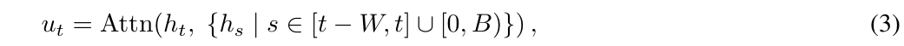
其中，\(W\) 表示局部上下文窗口大小，\(B\) 表示保留的前缀 token 数量。与全 attention 相比，这一设计在保留短期上下文与全局锚点的同时，显著降低计算和内存复杂度。
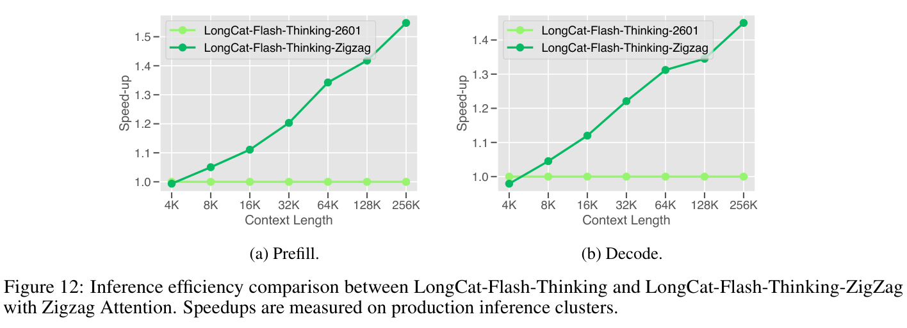
Zigzag Attention 采用按层交错的稀疏化策略。具体而言，约 50% 的全 attention 层被替换为 SSA 层，其余层保留基于 MLA 的全 attention。
（按层稀疏化的说明在原文第 21 页接续。）
8 https://huggingface.co/meituan-longcat/LongCat-Flash-Thinking-ZigZag
（接原文第 20 页“Zigzag 连通性”。）
这种层级稀疏性避免了按 attention 头稀疏化通常引入的计算不均衡和 GPU 线程分歧，提高了硬件利用效率。虽然每个 SSA 层内部的 attention 是稀疏且局部的，但全局信息通过跨层组合得到保留。通过交替设置稀疏层和全 attention 层，信息在多层中跨越远距离位置传播，沿序列形成之字形连通路径。因此，尽管每层具有稀疏性，长距离依赖仍然可以访问。
Zigzag Attention 通过结构化稀疏化流程，在中期训练期间引入。首先，我们使用校准数据集，估计预训练模型中各 attention 层的相对重要性。其次，将重要性分数最低的一部分层替换为 SSA 层。稀疏化后，模型继续进行长上下文中期训练，并结合基于 YaRN 的位置编码扩展，使上下文长度达到最高 1M token。在实践中，我们采用 128 的块大小，设置一个 sink 块和七个局部块，使每层有效 attention 跨度为 1,024 token。如图 12 所示，将约一半全 attention 层替换为 Zigzag Attention，带来约 \(1.5\times\) 的端到端推理加速，同时保留各基准上的推理表现与 agent 能力。
为释放处理更长上下文的能力，我们为这些方案配备 YaRN [Peng et al., 2024]，使 LongCat-Flash-Thinking-ZigZag 能够外推到处理最高 1M token。此外，我们提供模型涉及的几个关键参数：块大小为 128，sink 块数量为 1，局部块数量为 7，总计 1,024 token。
LongCat-Flash-Thinking-ZigZag 在性能与速度之间取得良好权衡。图 13 简要展示了它如何在保持有竞争力表现的同时提高效率。
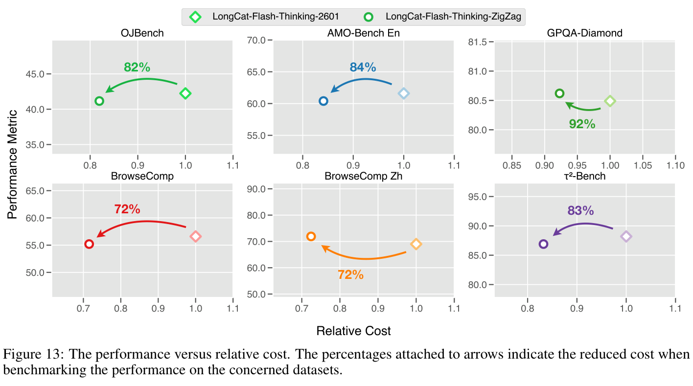
我们介绍了 LongCat-Flash-Thinking-2601，这是一个开放权重的 560B MoE 推理模型，具备卓越的 agent 推理能力。该模型建立在统一、端到端训练流程之上，对架构、预训练、后训练、数据构建和可扩展 RL 基础设施进行协同设计，全部明确面向长程、交互驱动的 agent 推理。支撑 LongCat-Flash-Thinking-2601 的核心创新如下：（i）可扩展的环境构建与多领域强化学习框架，使模型能够稳定获得可泛化的 agent 技能；（ii）稳健的 agent 训练流程，通过基于课程的强化学习，系统性纳入真实环境噪声；（iii）Heavy Thinking 模式，通过同时扩展推理宽度和深度，实现推理的有效 test-time scaling。通过这一整体设计，LongCat-Flash-Thinking-2601 在广泛 agent 基准上树立开源模型的新最先进水平，缩小与领先闭源模型的性能差距。
作者名单按字母顺序排列。英文姓名相同的条目，将根据中文笔画数和读音排序。星号（*）表示已离开团队的成员。
| Anchun Gui | Hongyan Hao | Mingyang Zhu | Xiandi Ma | Yongwei Zhou |
| Bei Li | Hongyin Tang | Peiguang Li | Xiangcheng Liu | Youshao Xiao |
| Bingyang Tao | Hongyu Zang* | Peng Pei | Xiangyu Xi | Yu Wang |
| Bole Zhou | Hongzhi Ni | Peng Zhao | Xiangyuan Liu | Yu Yang |
| Borun Chen | Hui Su | Pengcheng Jia | Xiangzhou Huang | Yuchen Xie |
| Chao Zhang(张超) | Jiacheng Zhang | Pengtao Zhang | Xiao Liu | Yuchen Yu |
| Chao Zhang(张朝) | Jiahong Zhou | Ping Liu | Xiaodong Cai | Yuchuan Dai |
| Chen Gao | Jiahuan Li | Qi Gu | Xiaolong Chen | Yue Xu |
| Chen Zhang | Jiaming Wang | Qiong Huang | Xiaowei Shi | Yueqing Sun |
| Chengcheng Han | Jian Yang | Qiyuan Duan | Xiaoyu Li | Yufei Zhang |
| Chenhui Yang | Jianfei Zhang | Quanchi Weng | Xin Chen | Yuhuai Wei |
| Chuyu Zhang | Jianhao Xu | Rongxiang Weng | Xingchen Liu | Yulei Qian |
| Cong Chen | Jianing Wang | Rongzhi Zhang | Xuan Huang | Yunfan Liang |
| Cunguang Wang | Jiapeng Zhu | Rumei Li | Xuezhi Cao | Yunke Zhao |
| Daoru Pan | Jiaqi Sun | Shanglin Lei | Xunliang Cai | Yuwei Jiang |
| Defei Bu | Jiarong Shi | Shengnan An | Yan Chen | Yuxin Bian |
| Dengchang Zhao | Jiarui Zhao | Shijun Dai | Shizhe Wu | Yang Bai |
| Yuxin Chen | Di Xiu | Jingang Wang | Shuaikang Liu | Yang Liu |
| Yuxin Liu | Dishan Liu | Jinluan Yang | Shuang Zhou | Yang Yang |
| Zeyang Yu | Dongyu Ru | Jinrui Ding | Shuo Wang | Yang Zheng |
| Zhao Yang | Dunwei Tu | Jinwei Xiao | Songyuan Zhao | Yanyu Chen |
| Zhengsheng Huang | Fan Wu | Jiyuan He | Tao Liang | Yaoming Wang |
| Zhengyu Chen | Fengcheng Yuan | Juncan Xu | Tianhao Hu | Yaoming Zhu |
| Zhijian Liu | Fengcun Li | Kefeng Zhang | Tianze Chen | Yaorui Shi |
| Zhikang Xia | Gang Xu | Keheng Wang | Wei Liu | Yaqi Huo |
| Zhimin Lin | Guanyu Wu | Li Wei | Wei Shi | Yerui Sun |
| Zhiyuan Yao | Guoyuan Lin | Lianhui Ma | Wei Wang | Yi Zhang |
| Zhuofan Chen | Haibin Wang | Lin Qiu | Weifeng Tang | Yifan Lu |
| Zhuowen Han | Hansi Yang | Lingbing Kong | Wenjie Shi | Yifan Zhao |
| Zijian Zhang | Hao Yang | Lingchuan Liu | Wenlong Zhu | Yihao Chen |
| Ziran Li | Haonan Yan | Linsen Guo | Wentao Chen | Yi-Kai Zhang |
| Ziwen Wang | Haoxiang Ma | Mengshen Zhu | Wentao Shi* | Yitao Zhai |
| Ziyuan Zhuang | Haoxing Wen | Mengxia Shen | Xi Su | Yongjing Yin |
LongCat-Flash
DeepSeek-AI. DeepSeek-R1：通过强化学习激发 LLM 的推理能力. CoRR, abs/2501.12948, 2025.
Zhihong Shao, Yuxiang Luo, Chengda Lu, Z. Z. Ren, Jiewen Hu, Tian Ye, Zhibin Gou, Shirong Ma, and Xiaokang Zhang. DeepSeekMath-V2：迈向可自验证的数学推理. CoRR, abs/2511.22570, 2025.
Anthropic. 介绍 Claude Opus 4.5, 2025. URL https://www.anthropic.com/news/claude-opus-4-5.
Google. Gemini 3 开启智能新时代, 2025. URL https://blog.google/products-and-platforms/products/gemini/gemini-3/#note-from-ceo.
MoonshotAI. Kimi-K2 文档, 2025. URL https://moonshotai.github.io/Kimi-K2/.
DeepSeek-AI, Aixin Liu, Aoxue Mei, Bangcai Lin, Bing Xue, Bingxuan Wang, Bingzheng Xu, Bochao Wu, Bowei Zhang, Chaofan Lin, Chen Dong, Chengda Lu, Chenggang Zhao, Chengqi Deng, Chenhao Xu, Chong Ruan, Damai Dai, Daya Guo, Dejian Yang, Deli Chen, Erhang Li, Fangqi Zhou, Fangyun Lin, Fucong Dai, Guangbo Hao, Guanting Chen, Guowei Li, H. Zhang, Hanwei Xu, Hao Li, Haofen Liang, Haoran Wei, Haowei Zhang, Haowen Luo, Haozhe Ji, Honghui Ding, Hongxuan Tang, Huanqi Cao, Huazuo Gao, Hui Qu, Hui Zeng, Jialiang Huang, Jiashi Li, Jiaxin Xu, Jiewen Hu, Jingchang Chen, Jingting Xiang, Jingyang Yuan, Jingyuan Cheng, Jinhua Zhu, Jun Ran, Junguang
（本页末条文献的作者名单在下一原文页接续。）
Jiang, Junjie Qiu, Junlong Li, Junxiao Song, Kai Dong, Kaige Gao, Kang Guan, Kexin Huang, Kexing Zhou, Kezhao Huang, Kuai Yu, Lean Wang, Lecong Zhang, Lei Wang, Liang Zhao, Liangsheng Yin, Lihua Guo, Lingxiao Luo, Linwang Ma, Litong Wang, Liyue Zhang, M. S. Di, M. Y Xu, Mingchuan Zhang, Minghua Zhang, Minghui Tang, Mingxu Zhou, Panpan Huang, Peixin Cong, Peiyi Wang, Qiancheng Wang, Qihao Zhu, Qingyang Li, Qinyu Chen, Qiushi Du, Ruiling Xu, Ruiqi Ge, Ruisong Zhang, Ruizhe Pan, Runji Wang, Runqiu Yin, Runxin Xu, Ruomeng Shen, Ruoyu Zhang, S. H. Liu, Shanghao Lu, Shangyan Zhou, Shanhuang Chen, Shaofei Cai, Shaoyuan Chen, Shengding Hu, Shengyu Liu, Shiqiang Hu, Shirong Ma, Shiyu Wang, Shuiping Yu, Shunfeng Zhou, Shuting Pan, Songyang Zhou, Tao Ni, Tao Yun, Tian Pei, Tian Ye, Tianyuan Yue, Wangding Zeng, Wen Liu, Wenfeng Liang, Wenjie Pang, Wenjing Luo, Wenjun Gao, Wentao Zhang, Xi Gao, Xiangwen Wang, Xiao Bi, Xiaodong Liu, Xiaohan Wang, Xiaokang Chen, Xiaokang Zhang, Xiaotao Nie, Xin Cheng, Xin Liu, Xin Xie, Xingchao Liu, Xingkai Yu, Xingyou Li, Xinyu Yang, Xinyuan Li, Xu Chen, Xuecheng Su, Xuehai Pan, Xuheng Lin, Xuwei Fu, Y. Q. Wang, Yang Zhang, Yanhong Xu, Yanru Ma, Yao Li, Yao Li, Yao Zhao, Yaofeng Sun, Yaohui Wang, Yi Qian, Yi Yu, Yichao Zhang, Yifan Ding, Yifan Shi, Yiliang Xiong, Ying He, Ying Zhou, Yinmin Zhong, Yishi Piao, Yisong Wang, Yixiao Chen, Yixuan Tan, Yixuan Wei, Yiyang Ma, Yiyuan Liu, Yonglun Yang, Yongqiang Guo, Yongtong Wu, Yu Wu, Yuan Cheng, Yuan Ou, Yuanfan Xu, Yuduan Wang, Yue Gong, Yuhan Wu, Yuheng Zou, Yukun Li, Yunfan Xiong, Yuxiang Luo, Yuxiang You, Yuxuan Liu, Yuyang Zhou, Z. F. Wu, Z. Z. Ren, Zehua Zhao, Zehui Ren, Zhangli Sha, Zhe Fu, Zhean Xu, Zhenda Xie, Zhengyan Zhang, Zhewen Hao, Zhibin Gou, Zhicheng Ma, Zhigang Yan, Zhihong Shao, Zhixian Huang, Zhiyu Wu, Zhuoshu Li, Zhuping Zhang, Zian Xu, Zihao Wang, Zihui Gu, Zijia Zhu, Zilin Li, Zipeng Zhang, Ziwei Xie, Ziyi Gao, Zizheng Pan, Zongqing Yao, Bei Feng, Hui Li, J. L. Cai, Jiaqi Ni, Lei Xu, Meng Li, Ning Tian, R. J. Chen, R. L. Jin, S. S. Li, Shuang Zhou, Tianyu Sun, X. Q. Li, Xiangyue Jin, Xiaojin Shen, Xiaosha Chen, Xinnan Song, Xinyi Zhou, Y. X. Zhu, Yanping Huang, Yaohui Li, Yi Zheng, Yuchen Zhu, Yunxian Ma, Zhen Huang, Zhipeng Xu, Zhongyu Zhang, Dongjie Ji, Jian Liang, Jianzhong Guo, Jin Chen, Leyi Xia, Miaojun Wang, Mingming Li, Peng Zhang, Ruyi Chen, Shangmian Sun, Shaoqing Wu, Shengfeng Ye, T. Wang, W. L. Xiao, Wei An, Xianzu Wang, Xiaowen Sun, Xiaoxiang Wang, Ying Tang, Yukun Zha, Zekai Zhang, Zhe Ju, Zhen Zhang, and Zihua Qu. DeepSeek-V3.2：推进开放 LLM 的前沿, 2025. URL https://arxiv.org/abs/2512.02556.
MiniMax. MiniMax M2 与 agent：简约中的巧思, 2025. URL https://www.minimax.io/news/minimax-m2.
LongCat Team Meituan, Bayan, Bei Li, Bingye Lei, Bo Wang, Bolin Rong, Chao Wang, Chao Zhang, Chen Gao, Chen Zhang, Cheng Sun, Chengcheng Han, Chenguang Xi, Chi Zhang, Chong Peng, Chuan Qin, Chuyu Zhang, Cong Chen, Congkui Wang, Dan Ma, Daoru Pan, Defei Bu, Dengchang Zhao, Deyang Kong, Dishan Liu, Feiye Huo, Fengcun Li, Fubao Zhang, Gan Dong, Gang Liu, Gang Xu, Ge Li, Guoqiang Tan, Guoyuan Lin, Haihang Jing, Haomin Fu, Haonan Yan, Haoxing Wen, Haozhe Zhao, Hong Liu, Hongmei Shi, Hongyan Hao, Hongyin Tang, Huantian Lv, Hui Su, Jiacheng Li, Jiahao Liu, Jiahuan Li, Jiajun Yang, Jiaming Wang, Jian Yang, Jianchao Tan, Jiaqi Sun, Jiaqi Zhang, Jiawei Fu, Jiawei Yang, Jiaxi Hu, Jiayu Qin, Jingang Wang, Jiyuan He, Jun Kuang, Junhui Mei, Kai Liang, Ke He, Kefeng Zhang, Keheng Wang, Keqing He, Liang Gao, Liang Shi, Lianhui Ma, Lin Qiu, Lingbin Kong, Lingtong Si, Linkun Lyu, Linsen Guo, Liqi Yang, Lizhi Yan, Mai Xia, Man Gao, Manyuan Zhang, Meng Zhou, Mengxia Shen, Mingxiang Tuo, Mingyang Zhu, Peiguang Li, Peng Pei, Peng Zhao, Pengcheng Jia, Pingwei Sun, Qi Gu, Qianyun Li, Qingyuan Li, Qiong Huang, Qiyuan Duan, Ran Meng, Rongxiang Weng, Ruichen Shao, Rumei Li, Shizhe Wu, and Shuai Liang. LongCat-Flash 技术报告. CoRR, abs/2509.01322, 2025.
Xuemiao Zhang, Can Ren, Chengying Tu, Rongxiang Weng, Shuo Wang, Hongfei Yan, Jingang Wang, and Xunliang Cai. 通过学习多样化 CoT 模式扩展基础模型的推理潜力, 2025a. URL https://arxiv.org/abs/2509.21124.
Chengying Tu, Xuemiao Zhang, Rongxiang Weng, Rumei Li, Chen Zhang, Yang Bai, Hongfei Yan, Jingang Wang, and Xunliang Cai. LLM 中期训练综述, 2025. URL https://arxiv.org/abs/2510.23081.
Zhihao Xu, Rumei Li, Jiahuan Li, Rongxiang Weng, Jingang Wang, Xunliang Cai, and Xiting Wang. 释放隐式经验：从文本合成工具使用轨迹, 2026. URL https://arxiv.org/abs/2601.10355.
LongCat Team Meituan., Anchun Gui, Bei Li, Bingyang Tao, Bole Zhou, Borun Chen, Chao Zhang, Chengcheng Han, Chenhui Yang, Chi Zhang, Chong Peng, Chuyu Zhang, Cong Chen, Fengcun Li, Gang Xu, Guoyuan Lin, Hao Jiang, Hao Liang, Haomin Fu, Haoxiang Ma, Hong Liu, Hongyan Hao, Hongyin Tang, Hongyu Zang, Hongzhi Ni, Hui Su, Jiahao Liu, Jiahuan Li, Jialin Liu, Jianfei Zhang, Jianhao Xu, Jianing Wang, Jiaqi Sun, Jiaqi Zhang, Jiarong Shi, Jiawei Yang, Jingang Wang, Jinrui Ding, Jun Kuang, Jun Xu, Ke He, Kefeng Zhang, Keheng Wang, Keqing He, Li Wei, Liang Shi, Lin Qiu, Lingbin Kong, Lingchuan Liu, Linsen Guo, Longfei An, Mai Xia, Meng Zhou, Mengshen Zhu, Peng Pei, Pengcheng Jia, Qi Gu, Qi Guo, Qiong Huang, Quan Chen, Quanchi Weng, Rongxiang Weng, Ruichen Shao, Rumei Li, Shanglin Lei, Shuai Du, Shuaikang Liu, Shuang Zhou, Shuhao Hu, Siyu Xu, Songshan Gong, Tao Liang, Tianhao Hu, Wei He, Wei Shi, Wei Wang, Wei Wu, Wei Zhuo, Weifeng Tang, Wenjie Shi, Wenlong Zhu, Xi Su, Xiangcheng Liu, Xiangyu Xi, Xiangzhou Huang, Xiao Liu, Xiaochen Jiang, Xiaowei Shi, Xiaowen Shi,
（本页末条文献的作者名单在下一原文页接续。）
Xiaoyu Li, Xin Chen, Xinyue Zhao, Xuan Huang, Xuemiao Zhang, Xuezhi Cao, Xunliang Cai, Yajie Zhang, Yang Chen, and Yang Liu. LongCat-Flash-Thinking 技术报告. CoRR, abs/2509.18883, 2025.
Ozan Sener and Silvio Savarese. 卷积神经网络的主动学习：核心集方法. 发表于 ICLR（海报）。 OpenReview.net, 2018.
Qianlong Du, Chengqing Zong, and Jiajun Zhang. MODS：面向模型的指令微调数据选择. CoRR, abs/2311.15653, 2023.
Shengguang Wu, Keming Lu, Benfeng Xu, Junyang Lin, Qi Su, and Chang Zhou. 用于高效指令微调的自演化多样化数据采样. CoRR, abs/2311.08182, 2023.
Tingyu Jiang, Shen Li, Yiyao Song, Lan Zhang, Hualei Zhu, Yuan Zhao, Xiaohang Xu, Kenjiro Taura, and Hao Henry Wang. 面向高效 LLM 指令微调的重要性感知数据选择. CoRR, abs/2511.07074, 2025.
Jia Zhang, Chen-Xi Zhang, Yao Liu, Yi-Xuan Jin, Xiao-Wen Yang, Bo Zheng, Yi Liu, and Lan-Zhe Guo. D3：感知多样性、难度与可靠性的数据选择，实现样本高效的 LLM 指令微调. 发表于 IJCAI，页码 8348–8356. ijcai.org, 2025b.
Wei Fu, Jiaxuan Gao, Xujie Shen, Chen Zhu, Zhiyu Mei, Chuyi He, Shusheng Xu, Guo Wei, Jun Mei, Jiashu Wang, 等 AReaL：面向语言推理的大规模异步强化学习系统. arXiv 预印本 arXiv:2505.24298, 2025.
Hanchen Zhang, Xiao Liu, Bowen Lv, Xueqiao Sun, Bohao Jing, Iat Long Iong, Zhenyu Hou, Zehan Qi, Hanyu Lai, Yifan Xu, 等 AgentRL：利用多轮、多任务框架扩展 agent 强化学习. arXiv 预印本 arXiv:2510.04206, 2025c.
Han Lu, Zichen Liu, Shaopan Xiong, Yancheng He, Wei Gao, Yanan Wu, Weixun Wang, Jiashun Liu, Yang Li, Haizhou Zhao, 等 第二部分：ROLL Flash——利用异步机制加速 RLVR 与 agent 训练. arXiv 预印本 arXiv:2510.11345, 2025a.
Meituan LongCat Team, Anchun Gui, Bei Li, Bingyang Tao, Bole Zhou, Borun Chen, Chao Zhang, Chengcheng Han, Chenhui Yang, Chi Zhang, 等 介绍 LongCat-Flash-Thinking：技术报告. arXiv 预印本 arXiv:2509.18883, 2025.
Pritam Damania, Shen Li, Alban Desmaison, Alisson Azzolini, Brian Vaughan, Edward Yang, Gregory Chanan, Guoqiang Jerry Chen, Hongyi Jia, Howard Huang, 等 PyTorch RPC：基于张量优化远程过程调用的分布式深度学习. Proceedings of Machine Learning and Systems, 5:219–231, 2023.
Yinmin Zhong, Shengyu Liu, Junda Chen, Jianbo Hu, Yibo Zhu, Xuanzhe Liu, Xin Jin, and Hao Zhang. DistServe：通过分离 prefill 与 decoding，优化 LLM 服务的有效吞吐. 发表于第 18 届 USENIX 操作系统设计与实现研讨会（OSDI 24），页码 193–210, 2024.
Ruoyu Qin, Zheming Li, Weiran He, Jialei Cui, Heyi Tang, Feng Ren, Teng Ma, Shangming Cai, Yineng Zhang, Mingxing Zhang, 等 Mooncake：以 KV-cache 为中心的 LLM 服务分离架构. ACM Transactions on Storage, 2024.
Chujie Zheng, Shixuan Liu, Mingze Li, Xiong-Hui Chen, Bowen Yu, Chang Gao, Kai Dang, Yuqiong Liu, Rui Men, An Yang, Jingren Zhou, and Junyang Lin. GSPO. CoRR, abs/2507.18071, 2025.
Ziniu Li, Congliang Chen, Tianyun Yang, Tian Ding, Ruoyu Sun, Ge Zhang, Wenhao Huang, and Zhi-Quan Luo. Knapsack RL：通过优化预算分配释放 LLM 的探索能力. CoRR, abs/2509.25849, 2025.
Xixi Wu, Kuan Li, Yida Zhao, Liwen Zhang, Litu Ou, Huifeng Yin, Zhongwang Zhang, Xinmiao Yu, Dingchu Zhang, Yong Jiang, 等 ReSum：通过上下文摘要释放长程搜索智能. arXiv 预印本 arXiv:2509.13313, 2025.
Jason Wei, Zhiqing Sun, Spencer Papay, Scott McKinney, Jeffrey Han, Isa Fulford, Hyung Won Chung, Alex Tachard Passos, William Fedus, and Amelia Glaese. BrowseComp：面向浏览 agent 的简单而富有挑战性的基准. CoRR, abs/2504.12516, 2025.
OpenAI. 介绍 OpenAI o1, 2024. URL https://openai.com/o1/.
DeepMind. Gemini 2.5 Pro, 2025. URL https://deepmind.google/models/gemini/pro/.
Gemma Team. Gemma 3 技术报告. CoRR, abs/2503.19786, 2025.
OpenAI. 介绍 GPT-5, 2025a. URL https://openai.com/index/introducing-gpt-5/.
Jingcheng Hu, Yinmin Zhang, Shijie Shang, Xiaobo Yang, Yue Peng, Zhewei Huang, Hebin Zhou, Xin Wu, Jie Cheng, Fanqi Wan, Xiangwen Kong, Chengyuan Yao, Ailin Huang, Hongyu Zhou, Qi Han, Zheng Ge, Daxin Jiang, Xiangyu Zhang, and Heung-Yeung Shum. PaCoRe：学习利用并行协调推理扩展测试时计算, 2025. URL https://github.com/stepfun-ai/PaCoRe/blob/main/pacore_report.pdf.
Yifan Zhang and Team Math-AI. 美国数学邀请赛（AIME）2025, 2025.
HMMT. HMMT 2025, 2025. URL https://www.hmmt.org/.
Thang Luong, Dawsen Hwang, Hoang H. Nguyen, Golnaz Ghiasi, Yuri Chervonyi, Insuk Seo, Junsu Kim, Garrett Bingham, Jonathan Lee, Swaroop Mishra, Alex Zhai, Clara Huiyi Hu, Henryk Michalewski, Jimin Kim, Jeonghyun Ahn, Junhwi Bae, Xingyou Song, Trieu H. Trinh, Quoc V. Le, and Junehyuk Jung. 迈向稳健的数学推理. CoRR, abs/2511.01846, 2025.
Shengnan An, Xunliang Cai, Xuezhi Cao, Xiaoyu Li, Yehao Lin, Junlin Liu, Xinxuan Lv, Dan Ma, Xuanlin Wang, Ziwen Wang, and Shuang Zhou. AMO-Bench：LLM 在高中数学竞赛中仍面临困难. CoRR, abs/2510.26768, 2025.
Peilin Zhou, Bruce Leon, Xiang Ying, Can Zhang, Yifan Shao, Qichen Ye, Dading Chong, Zhiling Jin, Chenxuan Xie, Meng Cao, Yuxin Gu, Sixin Hong, Jing Ren, Jian Chen, Chao Liu, and Yining Hua. BrowseComp-ZH：评测 LLM 的中文网页浏览能力. CoRR, abs/2504.19314, 2025.
Victor Barres, Honghua Dong, Soham Ray, Xujie Si, and Karthik Narasimhan. τ²-Bench：在双重控制环境中评估对话 agent. CoRR, abs/2506.07982, 2025.
Wei He, Yueqing Sun, Hongyan Hao, Xueyuan Hao, Zhikang Xia, Qi Gu, Chengcheng Han, Dengchang Zhao, Hui Su, Kefeng Zhang, Man Gao, Xi Su, Xiaodong Cai, Xunliang Cai, Yu Yang, and Yunke Zhao. VitaBench：利用真实应用中的多样化交互任务评测 LLM agent. CoRR, abs/2509.26490, 2025.
OpenAI. 介绍 GPT-5.2, 2025b. URL https://openai.com/index/introducing-gpt-5-2/.
David Rein, Betty Li Hou, Asa Cooper Stickland, Jackson Petty, Richard Yuanzhe Pang, Julien Dirani, Julian Michael, and Samuel R. Bowman. GPQA：研究生级、无法通过 Google 搜索轻易解答的问答基准. CoRR, abs/2311.12022, 2023.
Long Phan, Alice Gatti, Ziwen Han, Nathaniel Li, Josephina Hu, Hugh Zhang, Sean Shi, Michael Choi, Anish Agrawal, Arnav Chopra, Adam Khoja, Ryan Kim, Jason Hausenloy, Oliver Zhang, Mantas Mazeika, Daron Anderson, Tung Nguyen, Mobeen Mahmood, Fiona Feng, Steven Y. Feng, Haoran Zhao, Michael Yu, Varun Gangal, Chelsea Zou, Zihan Wang, Jessica P. Wang, Pawan Kumar, Oleksandr Pokutnyi, Robert Gerbicz, Serguei Popov, John-Clark Levin, Mstyslav Kazakov, Johannes Schmitt, Geoff Galgon, Alvaro Sanchez, Yongki Lee, Will Yeadon, Scott Sauers, Marc Roth, Chidozie Agu, Søren Riis, Fabian Giska, Saiteja Utpala, Zachary Giboney, Gashaw M. Goshu, Joan of Arc Xavier, Sarah-Jane Crowson, Mohinder Maheshbhai Naiya, Noah Burns, Lennart Finke, Zerui Cheng, Hyunwoo Park, Francesco Fournier-Facio, John Wydallis, Mark Nandor, Ankit Singh, Tim Gehrunger, Jiaqi Cai, Ben McCarty, Darling Duclosel, Jungbae Nam, Jennifer Zampese, Ryan G. Hoerr, Aras Bacho, Gautier Abou Loume, Abdallah Galal, Hangrui Cao, Alexis C. Garretson, Damien Sileo, Qiuyu Ren, Doru Cojoc, Pavel Arkhipov, Usman Qazi, Lianghui Li, Sumeet Motwani, Christian Schröder de Witt, Edwin Taylor, Johannes Veith, Eric Singer, Taylor D. Hartman, Paolo Rissone, Jaehyeok Jin, Jack Wei Lun Shi, Chris G. Willcocks, Joshua Robinson, Aleksandar Mikov, Ameya Prabhu, Longke Tang, Xavier Alapont, Justine Leon Uro, Kevin Zhou, Emily de Oliveira Santos, Andrey Pupasov Maksimov, Edward Vendrow, Kengo Zenitani, Julien Guillod, Yuqi Li, Joshua Vendrow, Vladyslav Kuchkin, and Ng Ze-An. 人类最后的考试. CoRR, abs/2501.14249, 2025.
Naman Jain, King Han, Alex Gu, Wen-Ding Li, Fanjia Yan, Tianjun Zhang, Sida Wang, Armando Solar-Lezama, Koushik Sen, and Ion Stoica. LiveCodeBench：对 LLM 代码能力进行全面、无污染评估. 发表于 ICLR。 OpenReview.net, 2025.
Zhexu Wang, Yiping Liu, Yejie Wang, Wenyang He, Bofei Gao, Muxi Diao, Yanxu Chen, Kelin Fu, Flood Sung, Zhilin Yang, Tianyu Liu, and Weiran Xu. OJBench：面向 LLM 的竞赛级代码基准. CoRR, abs/2506.16395, 2025.
Yaoming Zhu, Junxin Wang, Yiyang Li, Lin Qiu, ZongYu Wang, Jun Xu, Xuezhi Cao, Yuhuai Wei, Mingshi Wang, Xunliang Cai, and Rong Ma. OIBench：利用信息学奥林匹克竞赛评测强推理模型. CoRR, abs/2506.10481, 2025.
An Yang, Anfeng Li, Baosong Yang, Beichen Zhang, Binyuan Hui, Bo Zheng, Bowen Yu, Chang Gao, Chengen Huang, Chenxu Lv, Chujie Zheng, Dayiheng Liu, Fan Zhou, Fei Huang, Feng Hu, Hao Ge, Haoran Wei, Huan Lin, Jialong Tang, Jian Yang, Jianhong Tu, Jianwei Zhang, Jian Yang, Jiaxi Yang, Jingren Zhou, Junyang Lin, Kai Dang, Keqin Bao, Kexin Yang, Le Yu, Lianghao Deng, Mei Li, Mingfeng Xue, Mingze Li, Pei Zhang, Peng Wang, Qin Zhu, Rui Men, Ruize Gao, Shixuan Liu, Shuang Luo, Tianhao Li, Tianyi Tang, Wenbiao Yin, Xingzhang Ren, Xinyu Wang, Xinyu Zhang, Xuancheng Ren, Yang Fan, Yang Su, Yichang Zhang, Yinger Zhang, Yu Wan, Yuqiong Liu, Zekun Wang, Zeyu Cui, Zhenru Zhang, Zhipeng Zhou, and Zihan Qiu. Qwen3 技术报告. CoRR, abs/2505.09388, 2025.
Z.AI. GLM-4.7：提升编程能力, 2025. URL https://z.ai/blog/glm-4.7.
Jingyang Yuan, Huazuo Gao, Damai Dai, Junyu Luo, Liang Zhao, Zhengyan Zhang, Zhenda Xie, Yuxing Wei, Lean Wang, Zhiping Xiao, Yuqing Wang, Chong Ruan, Ming Zhang, Wenfeng Liang, and Wangding Zeng. 原生稀疏 attention：与硬件适配且可原生训练的稀疏 attention. 发表于 ACL（1），页码 23078–23097. Association for Computational Linguistics, 2025.
Enzhe Lu, Zhejun Jiang, Jingyuan Liu, Yulun Du, Tao Jiang, Chao Hong, Shaowei Liu, Weiran He, Enming Yuan, Yuzhi Wang, Zhiqi Huang, Huan Yuan, Suting Xu, Xinran Xu, Guokun Lai, Yanru Chen, Huabin Zheng, Junjie Yan, Jianlin Su, Yuxin Wu, Neo Y. Zhang, Zhilin Yang, Xinyu Zhou, Mingxing Zhang, and Jiezhong Qiu. MoBA：面向长上下文 LLM 的混合块 attention. CoRR, abs/2502.13189, 2025b.
Jusen Du, Weigao Sun, Disen Lan, Jiaxi Hu, and Yu Cheng. MoM：利用混合记忆进行线性序列建模. CoRR, abs/2502.13685, 2025.
Weigao Sun, Disen Lan, Tong Zhu, Xiaoye Qu, and Yu Cheng. Linear-MoE：线性序列建模与 MoE 结合. CoRR, abs/2503.05447, 2025.
Chen Zhang, Yang Bai, Jiahuan Li, Anchun Gui, Keheng Wang, Feifan Liu, Guanyu Wu, Yuwei Jiang, Defei Bu, Li Wei, Haihang Jing, Hongyin Tang, Xin Chen, Xiangzhou Huang, Fengcun Li, Rongxiang Weng, Yulei Qian, Yifan Lu, Yerui Sun, Jingang Wang, Yuchen Xie, and Xunliang Cai. 利用 LongCat Zigzag Attention 高效扩展上下文, 2026. URL https://arxiv.org/abs/2512.23966.
Guangxuan Xiao, Jiaming Tang, Jingwei Zuo, Junxian Guo, Shang Yang, Haotian Tang, Yao Fu, and Song Han. DuoAttention：利用检索头和流式头实现高效的长上下文 LLM 推理. CoRR, abs/2410.10819, 2024. doi:10.48550/ARXIV.2410.10819. URL https://doi.org/10.48550/arXiv.2410.10819.
Bowen Peng, Jeffrey Quesnelle, Honglu Fan, and Enrico Shippole. YaRN：高效扩展 LLM 的上下文窗口. 发表于第十二届国际学习表征会议，ICLR 2024，奥地利维也纳，2024 年 5 月 7–11 日。 OpenReview.net, 2024. URL https://openreview.net/forum?id=wHBfxhZu1u.
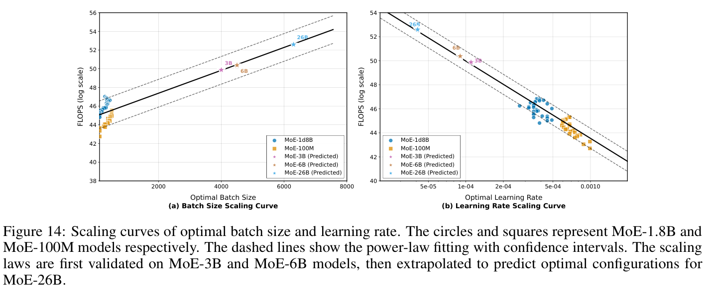
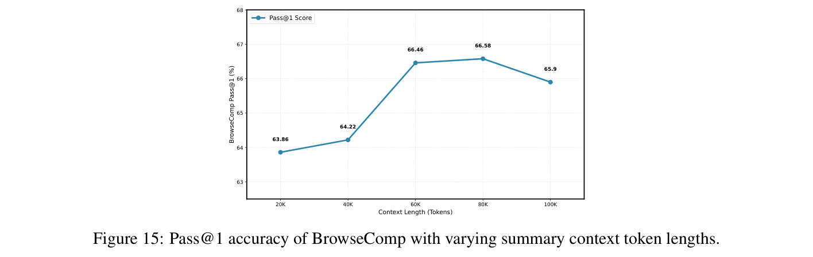
考虑到庞大的搜索空间和高昂计算成本，高效识别最优超参数是大规模中期训练的核心挑战之一。为应对这一挑战，我们提出一种新的最优超参数预测方法，专门用于最大限度降低寻找最佳配置的计算成本。
我们的方法包含两个关键步骤：
通过这一方法，我们能够预测支持高效持续训练的最优超参数，以极小的计算开销提升模型表现。
如图 15 所示，我们在不同摘要上下文 token 长度下评估 BrowseComp 的 Pass@1 准确率，最大上下文轮数限制为 500。准确率从 20K token 时的 63.86% 持续上升，在 80K token 时达到峰值 66.58%，随后在 100K token 时降至 65.9%。这表明 80K 是基于摘要的上下文管理的最优上下文长度，因此，在所有后续实验中，我们将 80K 上下文长度固定为触发摘要的阈值。